Salidas_02 : Código con 32 salidasABERRATIONSalidas a Strategy ABERRATION
Ando trasteando con el mercado de Forex, mercado donde nunca he conseguido nada interesante, dicho sea de paso. Pero viendo tus clases en la práctica comentabas que los pares contra el yen suelen ser más tendenciales. Tengo esta estrategia. Está sin optimizar nada, eh. Ha sido lo primero que ha salido (lo que pasa es que al optimizar queda algo parecido, con menos DD y la subida más parabólica, pero en general la forma es igual: muchos años en plano para luego despegar).
La estrategia es long only, tendencial, con el USDJPY. Timeframe 15 minutos, 725 trades. Data desde 2015 hasta hoy. Se pasa 4 años prácticamente sin romper ATH.
¿Tú echarías a andar este sistema o uno similar? Que un sistema no gane en 4 años es un poco triste, pero ojo, porque tampoco nada se rompe ni hay un DD desmesurado ni nada de esto.
Es que estoy en un punto en que me cuesta muy poco sentarme con la creatividad a validar ideas y probar cosas. Pero luego ya sentarte a decidir qué sí poner a operar y qué no… 👀
Con este tengo muchas dudas, a ver qué opinión te merece.
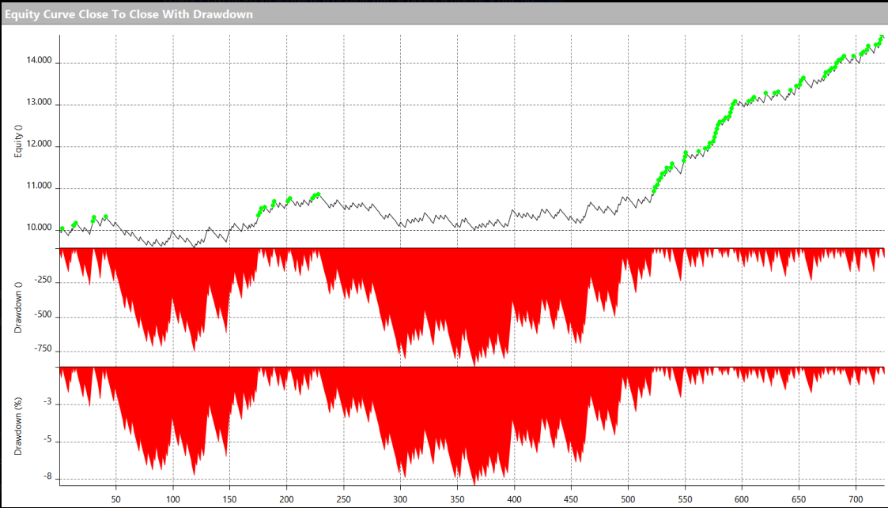
Dice si echaría a andar un sistema así; podría ser. La verdad es que sí, sería ideal mejorar todo ese periodo tan largo que dices de cuatro años; habría que estudiarlo un poco y ver. Pero es verdad que decías que es un tendencial, ¿no? Ese es un dibujo bastante típico de los tendenciales en intradía. Es decir, no es fácil conseguir un intradía tendencial hormiguita estable, vale.
Esto lo vas a encontrar más en Mean Reversion que en tendencial. Entonces, al final, es lo que hablamos siempre: si a ti te inspira confianza, es robusto, etcétera, y tienes ya una cartera y demás, pues por lo del portfolio. A nivel de análisis ya haremos, como digo, al menos una clase de esto: ver si aporta al portfolio, me explico. Es decir, si este fuera tu único sistema, probablemente no —es seguro que no—, diría que no. Pero si tú tienes un portfolio de estrategias, puede ser que aporte al portfolio; de hecho, es probable que lo haga, vale, es probable que lo haga si en él no hay muchos sistemas de este estilo.
Entonces, al final, siempre es ese un poco el punto. El comentario que haces de “que no gana en 4 años es un poco triste” es cierto, pero no es tan extraño en un tendencial; no es tan extraño en un tendencial real. O sea, claro, en backtest es verdad que… el tema es que si eso fuera live es triste, pero aceptable a nivel de portfolio. Repito: como backtest es más dudoso, es más dudoso, es más dudoso.
Ver video: Estrategia de salida eficaces
Como introducción a lo que vamos a hacer, porque digamos que es una continuación de esto, vale. Hablamos de la parte que ya habéis visto de salidas; no paro ni un segundo ahí, y me voy a centrar un poco en algo que ya habíais visto y que ya os he comentado varias veces, pero quiero enseñaros algún ejemplo, algún ejemplo práctico, y eso es lo que os quería enseñar.
En la derecha es porcentual, en la izquierda es en valor absoluto. Este es un extremo, pero pasaba en más activos; los que más, pasan en bolsa.
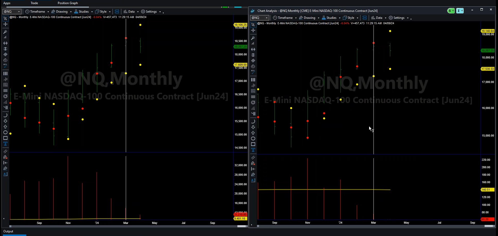
A la izquierda llega un momento en que el stop simplemente no actúa. A la izquierda llega un momento en que el stop simplemente no actúa. Tú tienes un stop a precios actuales que está parecido al actual, es decir, que la relación que va saltando con la que no es relativamente similar. Lógicamente hay alguna diferencia, pero es similar. Es decir, hay puntos amarillos, hay puntos rojos: cuando es rojo es que ha saltado, cuando es amarillo es que no ha saltado. Por arriba y por abajo. Entonces la relación, como veis, es bastante similar, con algún pequeño matiz, pero ya digo que es similar.
La cuestión es que ahora es parecido. El de la derecha todo el tiempo tiene una cierta armonía. Lógicamente, cuando no hay volatilidad salta menos, pero salta. Como veis, también va saltando.
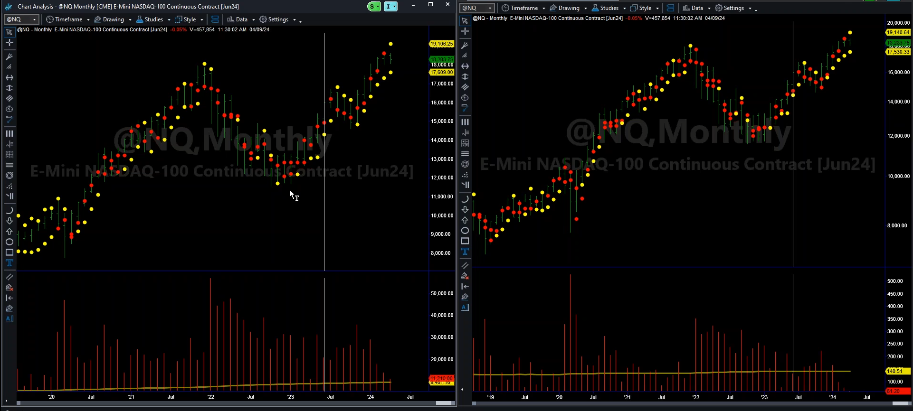
Y esto provoca simplemente que el stop… Si dimensionamos los stops en periodos un poco antiguos —y no hace falta irse al 2000; aunque te vayas al 2009, o incluso al 2010, incluso al 2012, depende del activo— ya se nota mucho. Es decir, aquí fijaros que ya se nota en el 2019. O sea, y en el 20, y ahora te cuento: en el 12, en el 13. Es decir, cualquier backtest te va a incorporar esos datos.
El Argumento de Andrea Unger y la Normalización
Entonces, ¿qué está pasando? Recordad que ya lo explicaba en la ponencia que recomiendo que veáis, y ya lo sabéis, porque esto lo he explicado bastantes veces: normalmente el stop rara vez va a mejorar el retorno. Casi todos estos análisis que hacen algunos analistas, como el que comenté —Andrea Unger—, se basan en el retorno. Y el retorno va a ser más en el de la izquierda. ¿Por qué va a ser más en el de la izquierda? Porque no salta el stop. Porque si aquí no hay stop, y sabemos que no tener stop aumenta el beneficio, pues es obvio que es mejor el de la izquierda.
Pero el hecho de que sea mejor —en el sentido de que gane más—, mejor dicho, el hecho de que gane más no quiere decir que sea mejor. En este caso quiere decir todo lo contrario.
Y por lo tanto, en un activo intradiario, vale, que no haya demasiada variación de precios, puede usarse el monetario. No se trata de decir —ahora vais a ver que nosotros también lo hemos puesto—, no se trata de decir “no, no, oye, nunca monetario”, vale. Pero en caso de duda, porcentual. O mejor aún, ajustado por volatilidad, vale. En caso de duda, siempre ajustado por volatilidad.
Y no se trata de que el backtest sea mejor o peor; simplemente es más realista, es más realista. No se trata de conseguir un backtest mejor —eso siempre es muy atractivo—, pero se trata de conseguir un backtest mejor siendo realista y siendo robusto. Porque conseguirlo mejor pues es relativamente sencillo, de acuerdo.
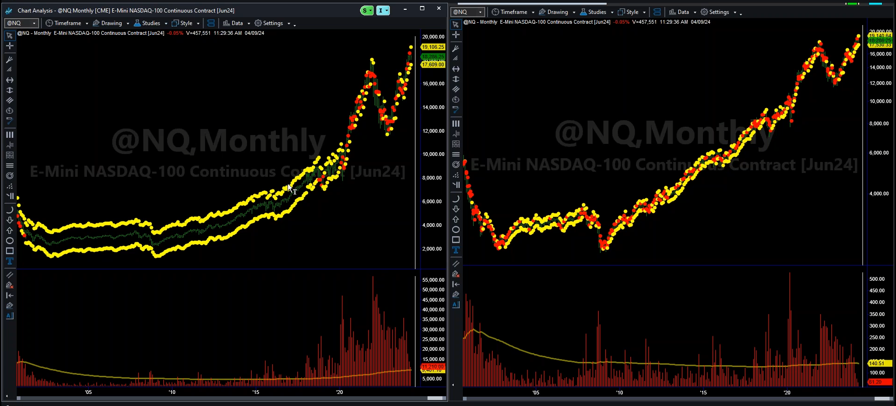
Abajo también se ve, porque abajo tenéis la volatilidad: a la derecha el valor del mercado en porcentaje y a la izquierda en dinero.
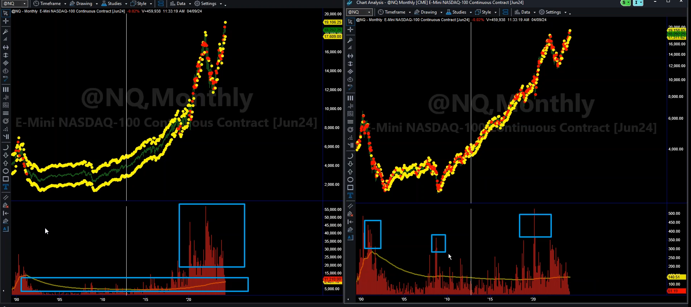
Y como veis, pues el de la derecha se mantiene bastante estable dentro de sus lógicas volatilidades, pero veis que tiene niveles y picos también bastante parecidos. Y fijaros la media de abajo, ¿no? La media es esta línea amarilla, bastante estable, vale. Y aquí pues lógicamente lo es menos; ahora últimamente ha ido subiendo y subiendo porque el precio se lo lleva, y ahora pues está viviendo precios que no ha visto nunca, vale.
Cuando el de la derecha, como veis, también los ha visto aquí y aquí, y son bastante parecidos. Entonces, bueno, el de la derecha está normalizado; el de la izquierda, no.
Entonces, no sé, a mí me sorprende que todo el mundo diga “hay que normalizar los precios, hay que normalizar los indicadores”, y en cambio los stops parece que no hay que normalizarlos. Entonces, no sé, es una cosa tremendamente contradictoria y que a mí me sorprende mucho. Y ya digo, en absoluto pongo en duda la calidad técnica de estos traders, pero a mí este argumento de verdad no lo entiendo, no lo entiendo.
Y es verdad, hay algunos activos donde se puede hacer, sobre todo de intradía y más pensando en materias primas y demás. Pero defenderlo de esta manera… a mí me… Y no explicar en el artículo esto que os digo yo… Dice que lo lógico sería ponerlo en porcentual, no, sería lógico. Luego dice que sería lógico, pero que los datos no lo confirman. ¡Coño, no lo confirman por lo que estoy diciendo! Estás haciendo una trampa estadística como una catedral, porque cualquier stop que tú ajustes aquí, a la izquierda, no va a saltar. Es posible en el pasado, pero la diferencia de precios es tan gigantesca…
Salidas_02 : Código con 32 salidasBueno, vamos con la clase de hoy. Queríamos hablar de salidas. Tenemos un código bastante chulo que os voy a compartir, que es el siguiente; vamos a enseñarlo. Es un código de salidas.
Aquí lo que creamos son unas especies de códigos que sirven para el desarrollo; que no es el sistema en sí, sino que es un código totalmente instrumental, que solo está pensado para desarrollar. Y que por supuesto le puedes modificar. Ahora hemos añadido algunos —ya teníamos alguno hecho, pero hemos añadido algunos más—, y es posible que con el tiempo añadamos y quitemos otros, de acuerdo.
Yo he incluido aquí todos los que he podido, los que hemos podido, y a lo mejor hasta nos hemos dejado alguno para poderlos explicar, y cómo funciona todo esto, vale.
Fijaros que al final hay cuatro inputs solo en el sistema:
inputs:
Entrada ( 0 ), # elegir de 0 a 14
Periodo_Entrada ( 46 ),
Salida ( 26 ), # elegir de 0 a 33
Periodo_Salida ( 46 );Los inputs son los parámetros que te permiten cambiar rápidamente en un gráfico: uno que define la entrada, otro que define la salida, y luego dos periodos para cada uno de ellos, por si quieres usar un periodo distinto. Por defecto lo dejo en 22, porque 22 es un mes más o menos, vale. Si va en diario, esto viene a ser parecido a un mes, pero da igual; tiene mayor importancia el periodo, que es el que puedes usar: 14, pues 14; 15, es igual.
A la entrada, 0 —o de 0 a 14—, ahora lo veis qué es. Y salida, de 0 a 32.
El case 0, aunque en la entrada lo he definido para que
lo tengáis claro: si no lo defines, es igual. Si yo no hubiera puesto un
case 0, si yo pongo cero, no hace nada, vale.
Entrada
(0-14) → Selecciona entre 15 tipos de entrada diferentesSalida (0-33) → Selecciona entre 34 tipos de salida
diferentesPeriodo_Entrada / Periodo_Salida → Parámetro
numérico para cada una
```sh
inputs:
Entrada ( 0 ), #elegir de 0 a 14
Periodo_Entrada ( 46 ),
Salida ( 26 ), #elegir de 0 a 33
Periodo_Salida ( 46 );
vars:
MP (0);
MP = MarketPosition;
switch (Entrada)
Begin
case 0: #No entries
case 1: #Simple Momentum Entry
case 2: #Breakout Next Bar Entry
case 3: #Single Moving Average Cross Entry
case 4: #Bollinger Band Entry
case 5: #Volatility Entry
case 6: #Bollinger trend
case 7: #Donchian
case 8: #Key Reversal
case 9: #Entramos en un Pullback contra la tendencia primaria
case 10: #Entramos en un Pullback a favor de la tendencia primaria
case 11: #Breakout + momentum
case 12: #RSI entrada saliendo de sobrecompra/sobreventa MR
case 13: #RSI entrada en tendencia
case 14: #RSI entrada saliendo de sobrecompra/sobreventa MR
End;
switch (salida)
Begin
case 0: #No exits
case 1: #Stop $ - Input: C01_Stop_$(1000);
case 2: #Stop % - Input: C02_Stop_Pct(02);
case 3: #Stop ATR - Input: C03_NumATRs (3), Periodo_Entrada(14), ATR_suelo ( 0 ), ATR_techo ( 10 );
case 4: #Profit $ - Input: C04_Profit_$(1000);
case 5: #Profit % - Input: C05_Profit_Pct(2);
case 6: #Profit ATR - Input: Periodo_Salida(14), C06_NumATRs(3);
case 7: #Breakeven $ - Input: C07_BreakEven_$(1000);
case 8: #Trailing ATR - Input: Periodo_Salida(14), C08_NumATRs(3);
case 9: #Salida por Tiempo - Input: C09_N_Bars(10);
case 10: #Salida al cierre
case 11: #Trailing ATR + Profit ATR - Input: Periodo_Salida(14), C11_NumATRs_01 ( 2.5 ), C11_NumATRs_02 ( 4.75 );
case 12: # Chandelier - Input: Periodo_Salida(14), C12_NumATRs(3);
case 13: #Bollinger banda contraria - Inputs: C13_DesvHiBand(2), C13_DesvLoBand(2), Periodo_Salida(10);
case 14: #Salida Trailling % - Inputs: C14_Prc_Trail(2);
case 15: #Stop $ + Profit $ - Input: C15_Stop_$(1000), C15_Profit_nxStop(1);
case 16: #Stop% + Profit% - Input: C16_Stop_Pct(2), C16_Profit_NxStopPct(1);
case 17: #Stop ATR + Profit ATR - Input: Periodo_Salida(14), C17_NumATRs (3), C17_Profit_NxStopATR (1.0);
case 18: #Chandelier + Profit% - Input: Periodo_Salida(14), C18_NumATRs(3), C18_Profit_Pct(2);
case 19: #Stop% + temporal - Input: C19_Stop_Pct(2), C19_N_Bars(10);
case 20: #Chandelier + temporal - Input: C20_StopPriceCanDecrease(0), C20_StopPriceCanIncrease(0), Periodo_Salida(14), C20_NumATRs(3), C20_N_Bars(10);
case 21: #Bollinger banda contraria + temporal - Inputs: C21_DesvHiBand(2), C21_DesvLoBand(2), Periodo_Salida(10), C21_N_Bars(10);
case 22: #Bollinger banda contraria + Stop% - Inputs: C22_DesvHiBand(2), C22_DesvLoBand(2),
case 23: #ParabolicSAR Exit - Inputs: C23_AfStep(.02), C23_AfLimit(0.2);
case 24: #Profit% + BreakEven$ - Input: C24_Profit_Pct(2), C24_BreakEven_$(1000);
case 25: #Stop% + BreakEven$ - Input: C24_Stop_Pct(2), C24_BreakEven_$(1000);
case 26: #Profit% + BreakEven% - Input: C26_Profit_Pct(2), C26_BreakEven_Pct(0.5);
case 27: #Stop% + BreakEven% - Input: C27_Stop_Pct(2), C27_BreakEven_Pct(0.5);
case 28: #BreakEven% - Input: C28_BreakEven_Pct(0.5);
case 29: #Stop% + Profit% + BreakEven% - Input: C29_Stop_Pct(3.75), C29_Profit_Pct (9.75), C29_BreakEven_Pct(6.5);
case 30: #Stop $ + Profit $ + BreakEven $ - Input: C29_Stop_$(1000), C29_Profit_$ (1000),
case 31: #Stop ATR + Profit ATR + BreakEven%- Input: Periodo_Salida(14), C31_NumATRs (3), C31_Profit_NxStopATR (1.0), C31_BreakEven_Pct (6.5);
case 32: #Cierre Media - Input: Periodo_Salida
case 33: #Key Reversal (si vemos que funciona la combinamos con otras salidas)
End;Esto es muy útil, yo lo puedo usar a cualquier sistema, yo lo puedo usar por ejemplo alternando entre gráfico y código para explicaros.
ABERRATIONEste gráfico que ahora enseño, si no recuerdo mal es el
ABERRATION más original, es decir el
Bollinger tendencial, os lo enseño porque éste es el que
está ahora en TradeStation, aunque le he puesto : “copiado del TSM
Bands que es el Bollinger Bands” que está en el libro este que os
he hablado tantas veces de Kaufman (Perry Kaufman - “Trading Systems and
Methods”) es el que vimos, no tiene ninguna modificación sólo le he
añadido la posibilidad de usar media normal o media exponencial.
# Strategy : ABERRATION
{ Copiado de TSM MA BBands: Moving average with Bollinger bands
Moving averge systems with entries using Bolllinger bands
Copyright 1999-2004, P J Kaufman. All rights reserved. }
{ period = length of moving average
nsd = number of standard deviations for the Bollinger band
}
input:
period(22),
nsd(2.0),
AvgOrXAvg("Avg");
vars:
ma(0),
bandup(0),
banddn(0),
pippo(0);
{ Moving average trend }
pippo = nsd * (-1);
bandup = BollingerBand(close,period,nsd);
banddn = bollingerband(close,period, pippo);
If AvgOrXAvg = "Avg" Then
ma = average(close,period)
Else
If AvgOrXAvg = "XAvg" Then
ma = xaverage(close,period)
else
RaiseRunTimeError("AvgOrXavg tiene que ser Avg o XAvg");
{ long signal : close must penetrate upper band }
if close crosses above bandup then
Buy next bar market;
{ short signal : close must penentrate lower band }
if close crosses below banddn then
Sell Short next bar market;
if marketposition > 0 and close crosses below ma then
Sell next bar market;
if marketposition < 0 and close crosses above ma then
Buy to Cover next bar market;De inicio yo tengo un código normal y este es su gráfico…
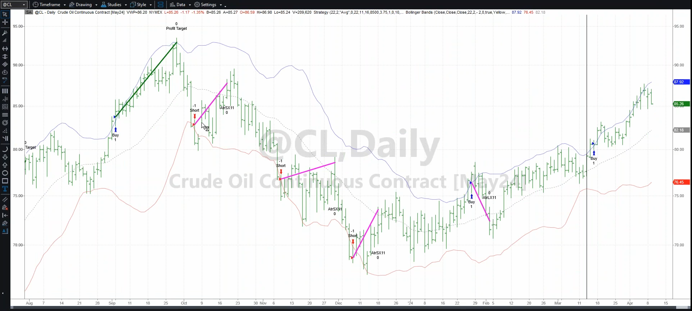
Entonces la base de Strategy : ABERRATION es la misma, si el cierre cierra por encima de la banda alta compra mercado,
{ long signal : close must penetrate upper band }
if close crosses above bandup then
Buy next bar market;si cierre cruza la banda baja vende corto a mercado,
{ short signal : close must penentrate lower band }
if close crosses below banddn then
Sell Short next bar market;y sale en la media central, cuando el cierre cruza la media central
para arriba, para abajo, sale.
Esta es la mecánica normal de ABERRATION.
if marketposition > 0 and close crosses below ma then
Sell next bar market;
if marketposition < 0 and close crosses above ma then
Buy to Cover next bar market;Entonces aquí os lo voy a explicar en este porque es muy sencillo, muy intuitivo, porque al final sí que tiene una salida pero tiene una salida como bastante lenta que está el propio sistema, entonces yo le puedo probar otras, le puedo probar otras, y es aquí donde entra un poco lo que os decía yo de la gracia de Easy Language, de TradeStation.
Procesamos distintos códigos en un mismo gráfico como si fueran una única señal
yo puedo introducir distintos códigos en un mismo gráfico y todos se procesan como si fueran una única señal, de acuerdo?
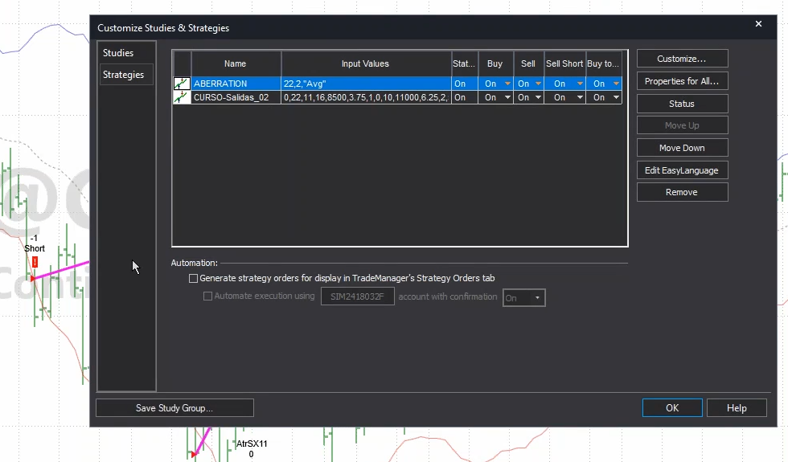
Por lo tanto si yo tengo este sistema
"Strategy : ABERRATION" y además introduzco unas salidas
"CURSO - Salidas_02", fíjate en la imagen. Esas salidas se
van a procesar normalmente igual que si estuvieran dentro del código,
sin ninguna diferencia. Lo único que tengo que hacer es que no tome
señales de entrada,
🔀 Dos strategies en un gráfico: separar entradas y
salidas
En TradeStation puedes poner varias strategies en el mismo
gráfico y se procesan como una única señal. En este
caso:
• ABERRATION → genera las ENTRADAS (compra/vende
cuando rompe la banda)
• CURSO-Salidas_02 → genera
solo las SALIDAS alternativas que quieres probar
Para que no se pisen, en CURSO-Salidas_02 pones
Entrada = 0. El case 0 no hace nada, así el
código de salidas no genera entradas propias y solo añade
salidas al sistema ABERRATION.
Salida.
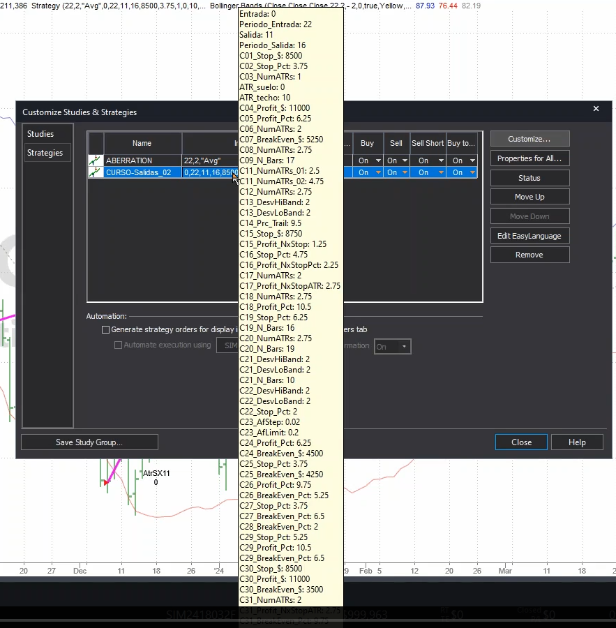
que si quisiera probar las entradas podría, pero no, no en este caso no me interesa porque lo que quiero es añadir, más que añadir quiero probar de manera con un solo código distintas salidas al sistema.
Lo normal es que no hayan tantas porque esto hasta este día es difícil de manejar,
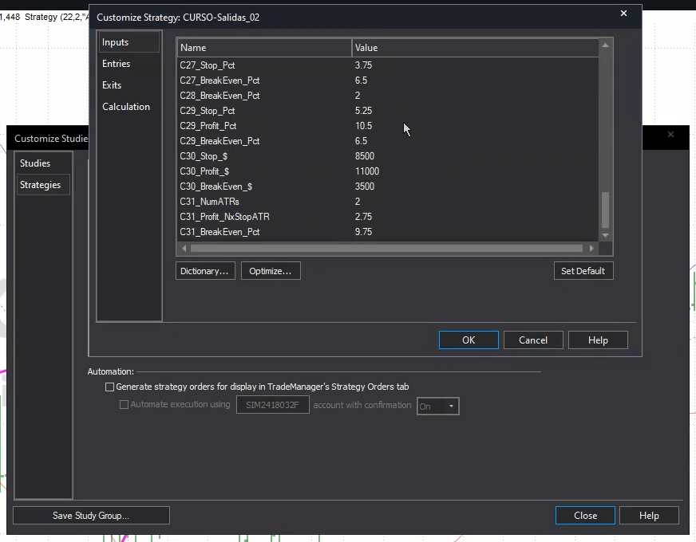
pero yo he puesto muchas para que lo veáis, pero lo normal es que no tengas tantas, que tengas las 3, 4, 5 que a ti te gusten y ya. Pero para que lo veáis y las tengáis todas y os lo pase pues las hemos metido un montón de salidas. Pero insisto que se puede manejar por cómo lo hemos hecho, pero lógicamente es más complicado manejar 32 tipos de salida que es lo que hay en esa hoja, que 5 ó 6, porque 32 por son muchas.
Entonces insisto en que, donde está la gracia es que yo simplemente cambiando, dejando la entrada en cero quiere decir que no hace nada,
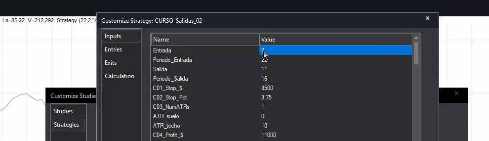
y cambiándole esta variable de salida,
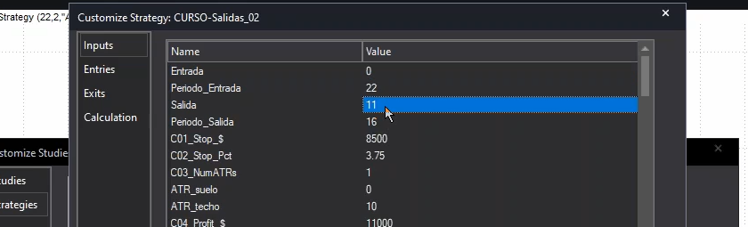
si le pongo 0, automáticamente veréis que las líneas verdes y rosas que son las que me marca la salida desaparecerán y seguirá saliendo por las que salía el sistema normalmente.
| Acción | Condición |
|---|---|
| Compra (Buy) | Cierre cruza por ENCIMA de la banda SUPERIOR |
| Vende corto (Short) | Cierre cruza por DEBAJO de la banda INFERIOR |
| Cierra largo (Sell) | Cierre cruza por DEBAJO de la media central |
| Cierra corto (Cover) | Cierre cruza por ENCIMA de la media central |
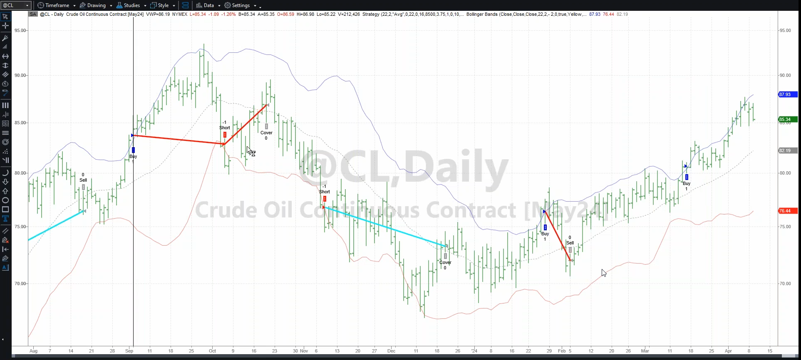
═══════════════ Banda Superior
┌─────┐
│ Buy │ ← Cierre cruza ENCIMA de banda superior → COMPRA
│ 1 │
└──┬──┘
│ - - - - - - - Media Central - - - - - -
│
▼ (línea roja = posición larga)
┌──────┐
│Short │ ← Cierre cruza DEBAJO de banda inferior → GIRA A CORTO
│ -1 │ (cierra el largo + abre corto)
└──┬───┘
│
▼ (línea roja = posición corta)
┌──────┐
│Cover │ ← Cierre cruza ENCIMA de media central → CIERRA CORTO
│ 0 │
└──────┘
═══════════════ Banda Inferior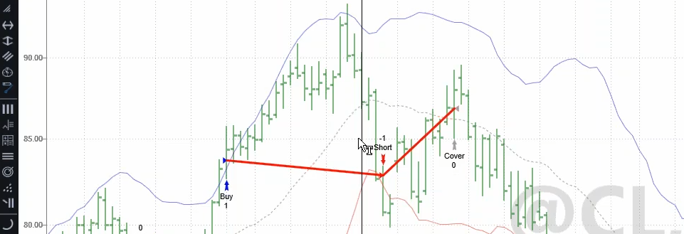
Imagen (el óvalo azul):
La vela marcada con el óvalo es especial porque hace dos cosas a la vez:
Como es una vela tan brusca (gráfico diario), cumple ambas condiciones simultáneamente y el sistema se gira corto directamente.
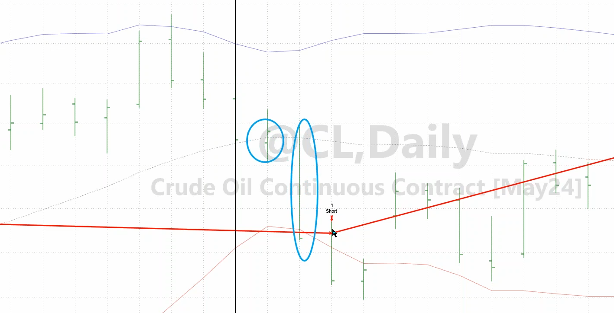
Aquí lo que pasa es que eso coincide, o sea, es una vela tan brusca, pues es que esto es un gráfico diario, que la misma vela que cierra por debajo, la del círculo no lo hace, esta no lo hace por poco. La del óvalo ya cierra por debajo de la media y por debajo de la banda, con lo cual lo que hace es girarse corto y hace girarse corto porque hace las dos cosas a la vez, ¿de acuerdo?
Vale, estas son las originales del sistema, salidas originales del sistema.
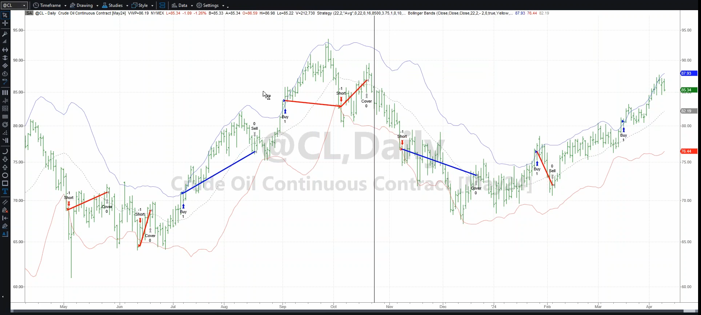
Salidas a Strategy ABERRATIONEntonces yo ahora aquí activo las salidas. Vamos a empezar por el 1, poco a poco, por partes, como diría Jack.
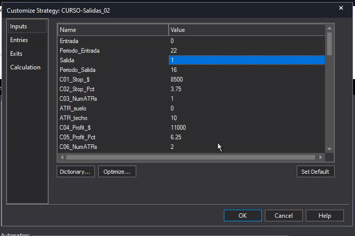
tengo una chuleta aquí, porque os imagináis con 32, con la memoria que tengo, pues no puede…
inputs:
...
...
Salida ( 26 ), #elegir de 0 a 33
Periodo_Salida ( 46 );
...
switch (salida)
Begin
case 0: #No exits
case 1: #Stop $ - Input: C01_Stop_$(1000);
case 2: #Stop % - Input: C02_Stop_Pct(02);
case 3: #Stop ATR - Input: C03_NumATRs (3), Periodo_Entrada(14), ATR_suelo ( 0 ), ATR_techo ( 10 );
case 4: #Profit $ - Input: C04_Profit_$(1000);
case 5: #Profit % - Input: C05_Profit_Pct(2);
case 6: #Profit ATR - Input: Periodo_Salida(14), C06_NumATRs(3);
case 7: #Breakeven $ - Input: C07_BreakEven_$(1000);
case 8: #Trailing ATR - Input: Periodo_Salida(14), C08_NumATRs(3);
case 9: #Salida por Tiempo - Input: C09_N_Bars(10);
case 10: #Salida al cierre
case 11: #Trailing ATR + Profit ATR - Input: Periodo_Salida(14), C11_NumATRs_01 ( 2.5 ), C11_NumATRs_02 ( 4.75 );
case 12: # Chandelier - Input: Periodo_Salida(14), C12_NumATRs(3);
case 13: #Bollinger banda contraria - Inputs: C13_DesvHiBand(2), C13_DesvLoBand(2), Periodo_Salida(10);
case 14: #Salida Trailling % - Inputs: C14_Prc_Trail(2);
case 15: #Stop $ + Profit $ - Input: C15_Stop_$(1000), C15_Profit_nxStop(1);
case 16: #Stop% + Profit% - Input: C16_Stop_Pct(2), C16_Profit_NxStopPct(1);
case 17: #Stop ATR + Profit ATR - Input: Periodo_Salida(14), C17_NumATRs (3), C17_Profit_NxStopATR (1.0);
case 18: #Chandelier + Profit% - Input: Periodo_Salida(14), C18_NumATRs(3), C18_Profit_Pct(2);
case 19: #Stop% + temporal - Input: C19_Stop_Pct(2), C19_N_Bars(10);
case 20: #Chandelier + temporal - Input: C20_StopPriceCanDecrease(0), C20_StopPriceCanIncrease(0), Periodo_Salida(14), C20_NumATRs(3), C20_N_Bars(10);
case 21: #Bollinger banda contraria + temporal - Inputs: C21_DesvHiBand(2), C21_DesvLoBand(2), Periodo_Salida(10), C21_N_Bars(10);
case 22: #Bollinger banda contraria + Stop% - Inputs: C22_DesvHiBand(2), C22_DesvLoBand(2),
case 23: #ParabolicSAR Exit - Inputs: C23_AfStep(.02), C23_AfLimit(0.2);
case 24: #Profit% + BreakEven$ - Input: C24_Profit_Pct(2), C24_BreakEven_$(1000);
case 25: #Stop% + BreakEven$ - Input: C24_Stop_Pct(2), C24_BreakEven_$(1000);
case 26: #Profit% + BreakEven% - Input: C26_Profit_Pct(2), C26_BreakEven_Pct(0.5);
case 27: #Stop% + BreakEven% - Input: C27_Stop_Pct(2), C27_BreakEven_Pct(0.5);
case 28: #BreakEven% - Input: C28_BreakEven_Pct(0.5);
case 29: #Stop% + Profit% + BreakEven% - Input: C29_Stop_Pct(3.75), C29_Profit_Pct (9.75), C29_BreakEven_Pct(6.5);
case 30: #Stop $ + Profit $ + BreakEven $ - Input: C29_Stop_$(1000), C29_Profit_$ (1000),
case 31: #Stop ATR + Profit ATR + BreakEven%- Input: Periodo_Salida(14), C31_NumATRs (3), C31_Profit_NxStopATR (1.0), C31_BreakEven_Pct (6.5);
case 32: #Cierre Media - Input: Periodo_Salida
case 33: #Key Reversal (si vemos que funciona la combinamos con otras salidas)
End;Y en cuanto a las salidas: - Case 1, con un comentario de qué hace y qué obtiene. Case 1 es un stop monetario. - El Case 2 es un stop porcentual, vale. - El Case 3 es un stop por ATR. - El 4 es un profit monetario. - El 5 es un profit porcentual.
Y así sucesivamente hasta 32, vale. Ya lo teníamos viendo un poco
sobre la marcha; vamos a verlos todos ahora.
El 6, profit por ATR. A partir del 8 se van combinando. Como
veis, aquí hay muchísimo código ya desarrollado, y esto creo que puede
tener bastante utilidad para todos. Vamos a empezar por lo más sencillo.
Los primeros case están más o menos ordenadas; he llegado a
un punto en que ya las he ordenado desordenadas. Al final, simplemente
hemos añadido las nuevas abajo.
Case 1 Salida
monetaria : Stop $La primera es salida monetaria:
case 1: #Stop $ - Input: C01_Stop_$(1000);.
Entonces, aquí yo le he añadido ahora un stop monetario, que,
por lo que veo, no está saltando demasiado:
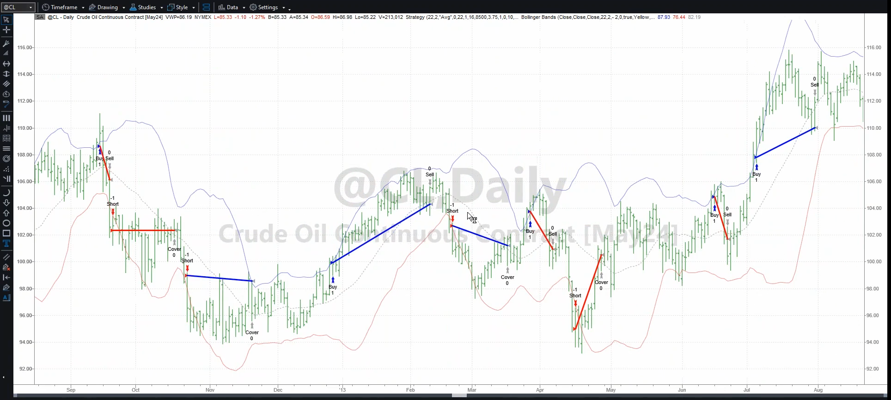
Estructura del código de salidas
Entonces, lo que os decía: es el código de salidas, tiene de 0 a 32 salidas, y de 0 a 7 entradas, como lo veremos también.
Me escondo ahora las entradas.
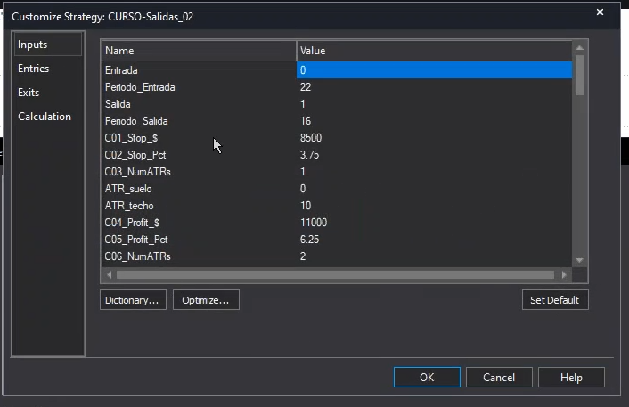
Sistema de nomenclatura de inputs
Esto tiene la ventaja de que en el mismo código yo puedo probar varios. Yo ya he estado antes investigando un poquito con él. Cada uno de ellos, casi todos, tienen unos inputs, y por eso, si ahora desplegamos aquí, veis que aquí hay un montón de inputs.
switch (salida)
Begin
case 1:
Input:
C01_Stop_$ ( 4000 );
case 2:
Input:
C02_Stop_Pct ( 3 ); //en tanto por 100
case 3:
Input:
C03_NumATRs ( 14 ),
case 4:
Input:
C04_Profit_$ ( 7500 );
...
...
case 11:
Input:
C11_NumATRs_01 ( 7.75 ),
C11_NumATRs_02 ( 7.25 );
...
---
case 29:
Input:
C29_Stop_Pct ( 3.5 ),
C29_Profit_Pct ( 2 ),
C29_BreakEven_Pct ( 1.75 );
case 30:
Input:
C30_Stop_$ ( 4000 ),
C30_Profit_$ ( 8000 ),
C30_BreakEven_$ ( 3000 );
case 31:
Input:
C31_NumATRs ( 3 ),
C31_Profit_NxStopATR ( 2.5 ),
C31_BreakEven_Pct ( 2.5 );¿Qué hemos hecho para que sean más o menos fáciles de seguir?
Pues ponerle delante el C01, C02,
C03, C04, luego os diré estos dos qué son,
C05, C06. De esta manera sabes a qué
case se refiere.
Si yo pongo arriba salida case 11:
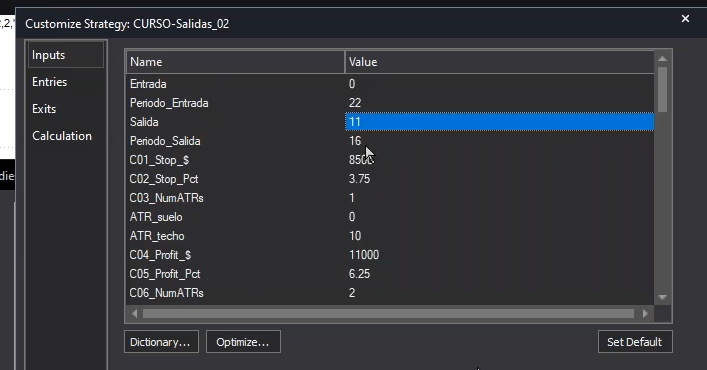
Sé que la case 11 tiene dos ATRs. Voy a mi lista de
casesy veo que es el trailing ATR con
profit.
Sé que los que tengo que ir a tocar son los imput
C11_NumATRs_01 o C11_NumATRs_02 del
#Trailing ATR + Profit ATR
case 11:
# Input: Periodo_Salida(14), C11_NumATRs_01 ( 2.5 ), C11_NumATRs_02 ( 4.75 );
Input:
C11_NumATRs_01 ( 7.75 ),
C11_NumATRs_02 ( 7.25 );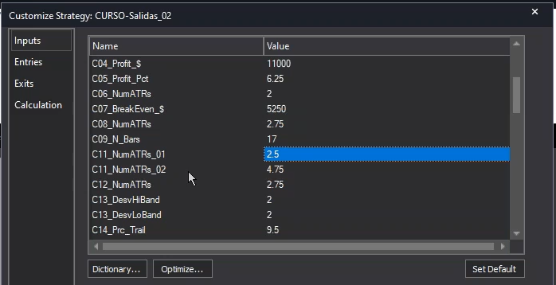
Uso instrumental, no para optimización masiva
Claro, esto no penséis que es para optimizarlo todo. Esto sería una locura. Pero sí que puedes optimizar alguno de ellos e ir probando. Ahora pongo el case 5 y optimizo el case 5. Pero pruebo un poco, vale. Optimizar a nivel instrumental.
Esto sobre todo es base de desarrollo, de evaluación preliminar y demás. Pues para diseñar, para ayudarte a diseñar el sistema si todavía no tienes claro por dónde ir, o para probar rápidamente distintas versiones: “Voy a probar esta salida, voy a probar otra, y hay distintas”, vale.
Case 8
Salida por volatilidad: Trailing por ATR**Entonces, ya digo, están las principales. Voy a explicar quizá un poquito las más extrañas o las que hemos visto menos. Porque, a ver, stop monetario, stop porcentual mezclado, todo el mundo tiene claro qué es esto, ¿no? Entonces, al final, un trailing también. Vamos a poner algunas así un poco más rebuscaditas poco a poco.
Vamos a empezar por la 8 que es un trailing.
case 8: # Trailing ATR
begin
Input: # Input: Periodo_Salida(14), C08_NumATRs(3);
C08_NumATRs ( 9 );🔄 Trailing ATR: Case 8 - Cómo
funciona
Cálculo base:
ATRCalc = ATR(Periodo) ×
NumATRs
Para LARGOS (MP = 1):
• Guarda el máximo más
alto desde la entrada (PosHigh)
• Stop en:
PosHigh - ATRCalc
• El stop sube cuando el
precio hace nuevos máximos, pero nunca baja
Para CORTOS (MP = -1):
• Guarda el mínimo más
bajo desde la entrada (PosLow)
• Stop en: PosLow
+ ATRCalc
• El stop baja cuando el precio hace
nuevos mínimos, pero nunca sube
ATRCalc =
2 × 3 = 6\(</code><br>
Si <code>PosHigh = 100\) → Stop en 94\(</code><br>
Si precio sube a <code>105\) → Stop sube a
99\(</code><br>
Si precio baja a <code>102\) → Stop se queda en
99$ (no retrocede)
El trailing “persigue” el precio a una distancia fija en ATRs, adaptándose a la volatilidad del activo.
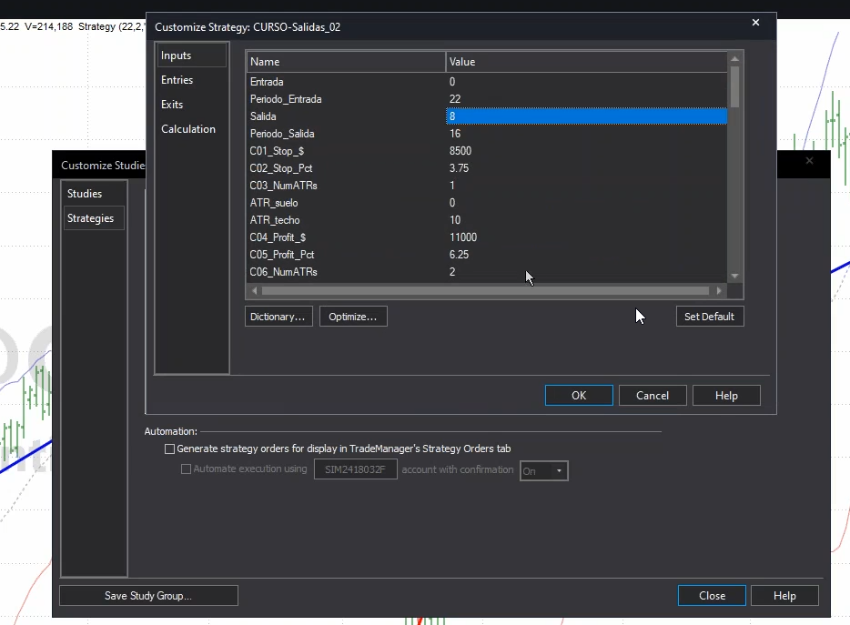
⚙️ Parámetros del indicador ATR en
TradeStation
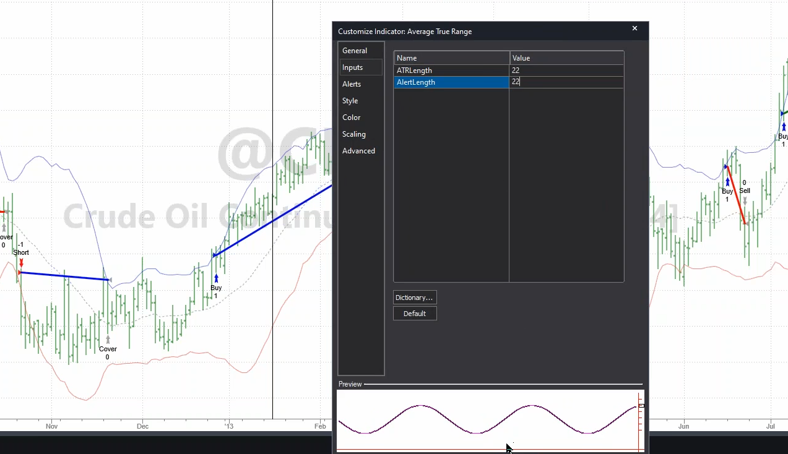
Entonces, ¿ves? Aquí tenéis verdes y rosas, ¿ves? Esto quiere decir que ha salido por ese mecanismo de salida, de acuerdo.
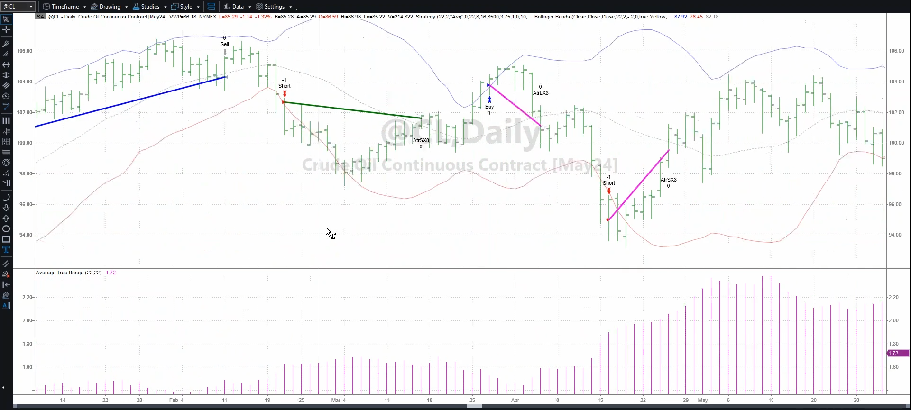
Desactivar salidas originales del sistema
Muchas veces, en este caso, claro, ese sistema ya tiene implementadas las salidas. Que yo podría inhabilitarlas. Podría decir: “Bueno, yo no quiero que salgan”. Esto también se podría hacer mediante código, y es habitual hacerlo, pero en TradeStation tenemos estas pestañitas de aquí:
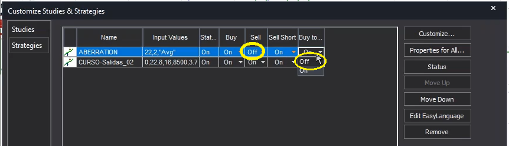
Esto, por ejemplo, a veces viene bien. Son las cuatro señales que hay
en el sistema: BUY, SELL,
SELL SHORT, BUY TO COVER. Al final te permite,
tanto en el BUY que son los de abrir, como en el
SELL SHORT, activarlo, desactivarlo, o dejarlo de salida
solo. Pero también me permite que las que son solo de salida, como el
SELL y como el BUY TO COVER,
desactivarlas.
De esta manera yo ahora, al ABERRATION, le desactivo sus
señales primarias. Y automáticamente sólo podrá salir por las de ATR.
Todas son rosas y verdes porque no puede salir de otra manera.
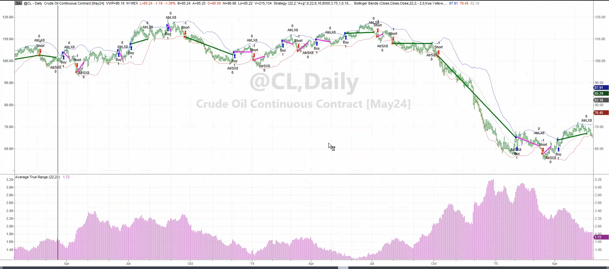
Esto desconozco si es mejor o peor, porque no lo he probado. Hemos hecho antes alguna optimización para ver que estuvieran bien hechos. En principio, creo… puede ser que se nos haya colado un bug en algún rato; si nos habéis detectado alguno, claro que hemos hecho mucho código, y podría ser que hubiera un bug. Pero vaya, en principio está repasado; debería estar bien, vale.
Comparativa: con y sin salidas originales
Y ahora aquí, básicamente, en este sencillo sistema, os puedo evaluar qué datos me da con las salidas de ATR, solo una u otra, vale.
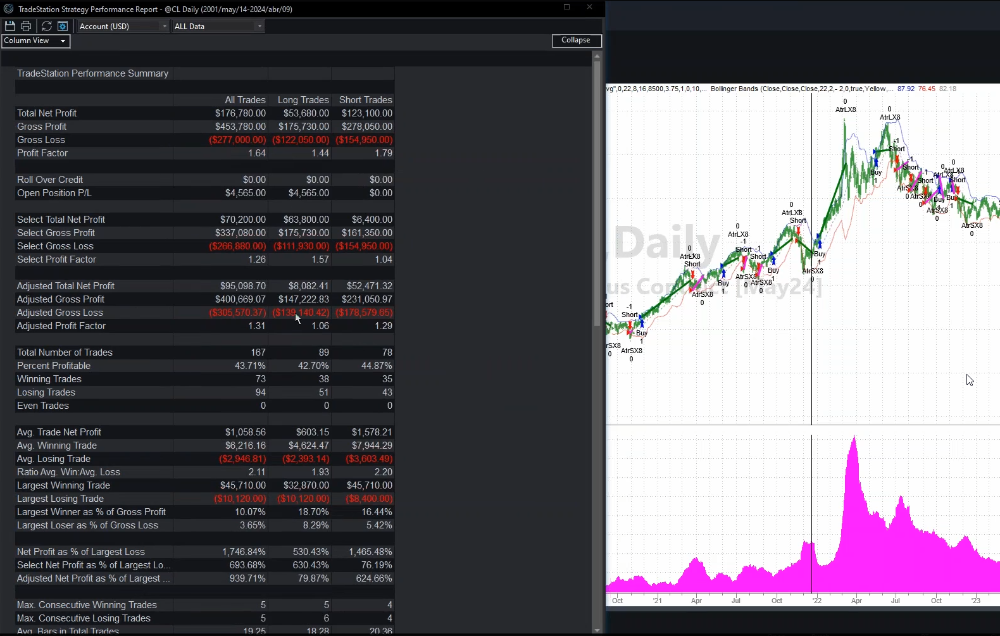
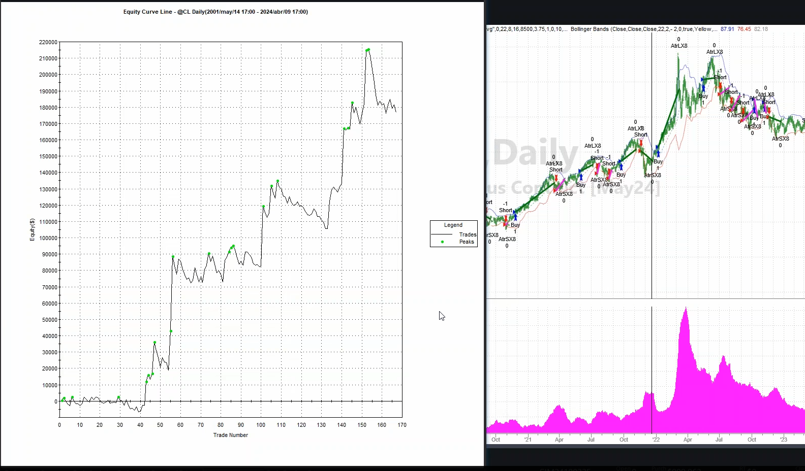
Introduciendo esta. Ahora vuelvo a activar sus salidas originales, complementarias a las otras, complementarias a las otras salidas.
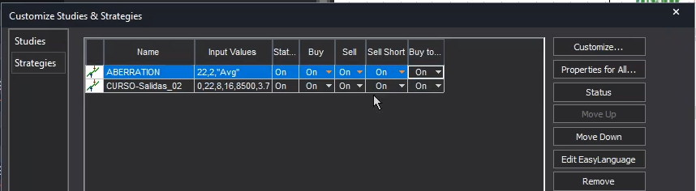
Y aquí veremos que, pues, pues, que empeora. Es decir, al final, la salida del sistema original no está aportando.
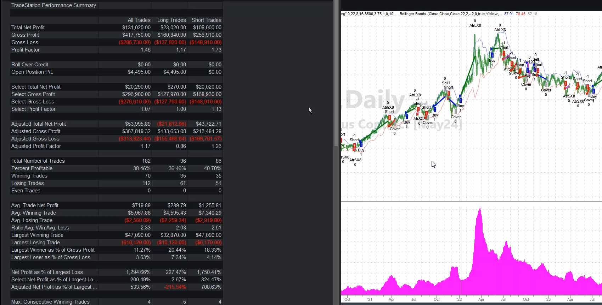
Miremos Ratios retorno riesgo:
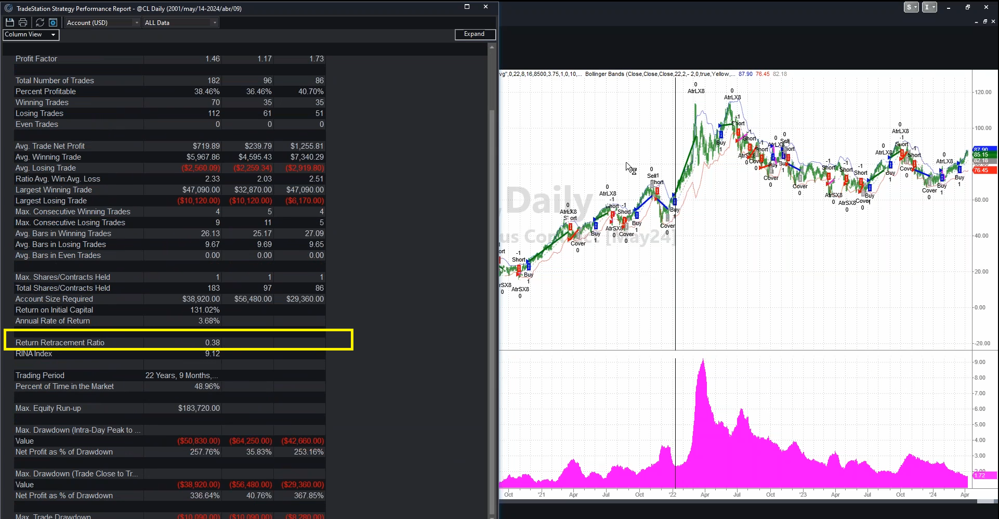
Había puesto los colores para diferenciar las salidas del sistema
original con nuestras salidas 32, pero ahora estoy pensando
que dejamos todo el rato las que pongamos nosotros.
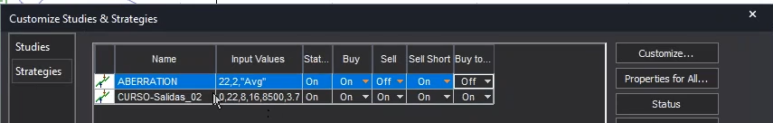
Comportamiento sin salida propia: solo banda contraria
Claro, en este caso sí que ya no nos valen… ,
buenos sí nos valen, porque el sistema puede hacer reverse. Es
decir, puede ir al lado contrario. Es decir, si yo le pongo una que solo
es stop, vale?, imaginemos ahora que le pongo la 1, que es
dinero, salida 1, dinero, vale.
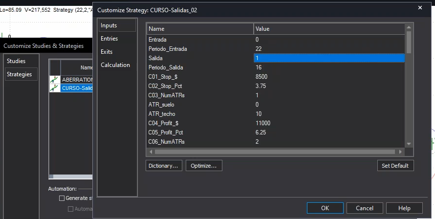
Le pongo stop; vamos a bajarlo a 5.000, porque si no
pues creo que va a costar mucho que salte. 5.000 dólares, vale.
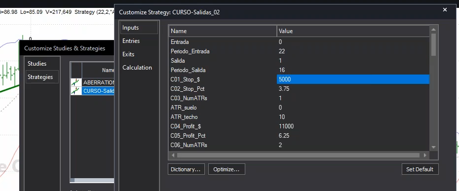
Cuando gana, no puede salir; no tiene salida. ¿Cuál es su salida? Solo la banda contraria.
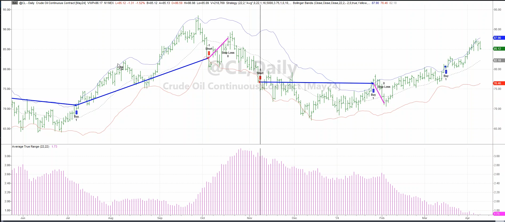
Entonces, este probablemente es poco eficiente, sobre todo en términos de retorno-riesgo, porque fijaros aquí el drawdown que se traga volviendo:
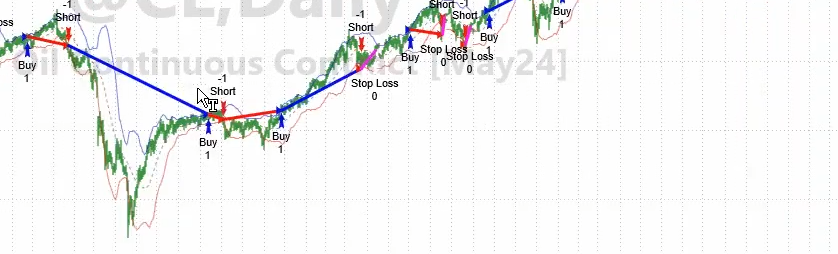
Como no tiene otra salida que la contraria, en la banda contraria,
pues no puede salir.
Esto probablemente no es tampoco súper eficiente en datos de
retorno-riesgo:
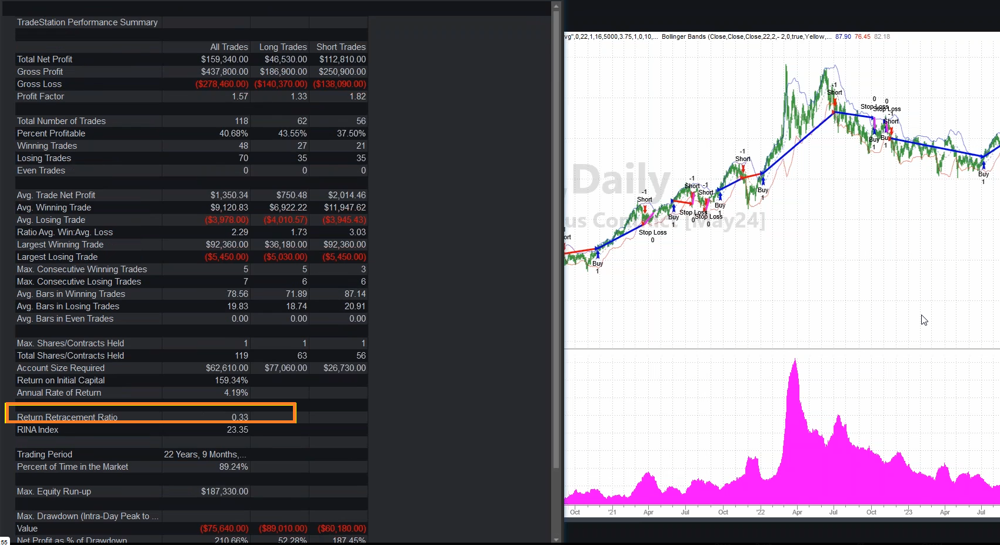
Aunque, como vemos en el retorno, aguanta bien. Es que Bollinger, Bollinger solo, ABERRATION en petróleo va bastante bien. Tiene un drawdown fuerte, como ya os comenté, pero va bien en diarios. Es un sistema que aguanta bien. ABERRATION en una cesta de materias primas aguanta bastante bien el tipo, y además con la suerte de que lleva muchísimos años de funcionamiento. Es un sistema que sigue una pauta muy lógica: expansión de volatilidad.
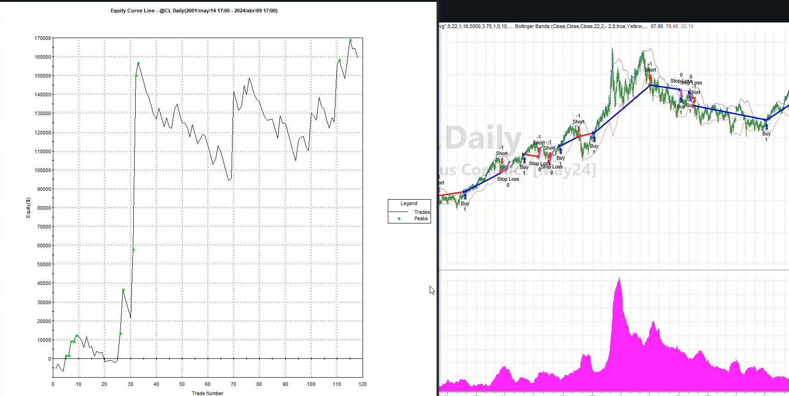
ABERRATION en cesta de materias primas
Y por lo tanto, os animo a aquellos que tengáis cuentas grandes —porque esto tiene que ser con cuentas grandes— a probarlo en una cesta de distintas materias primas. Pues yo qué sé: maíz, soja, petróleo, oro, y más que ahora no me salen, pero que sean de bastante tendencia. Carne… bueno, tienen poca liquidez algunas, pero se pueden explorar perfectamente. Y ahí explorar la idea básica con alguna salida; incluso buscaría trabajarlos de manera conjunta en diario para evitar un poco la sobreoptimización.
Pero es una cesta viable, una cesta que tendrá puntos débiles, muchos, pero en la parte de tendencia será una buena cesta, en la parte tendencial. Necesitaremos a lo mejor estrategias antitendenciales que pueden ir en S&P, pueden ir en Nasdaq, pueden ir en bonos, vale. Pero la parte de tendencia, seguramente tendremos una cartera que pasará un poco lo que hablábamos antes en el ejemplo ese que ponía Alejandro: que tendrá periodos muy largos muy planos, pero que luego tendrá periodos de locura de ganancias. Esto, esto pasa.
Continuación: Trailing (Case 8)
Este ya os digo que solo es el del stop. Entonces, vamos a dejar deshabilitadas las de ABERRATION original:
Y así vamos viendo algunas más, vale. El trailing, ¿cómo funcionaba el trailing? Que me ha ido un poco, como me suele pasar… Estábamos con la 8, estamos con la 8.
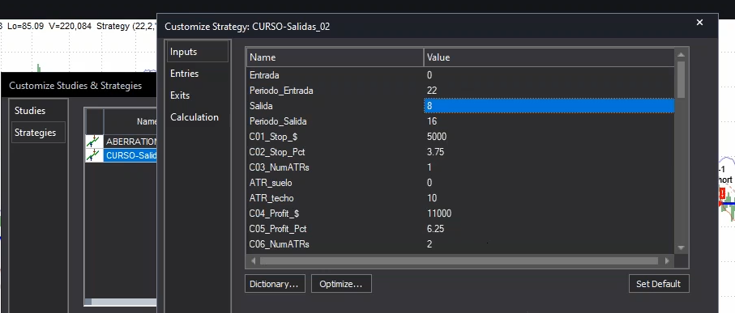
Eso sale por este código nuestro, a medida que le indiquemos cómo.
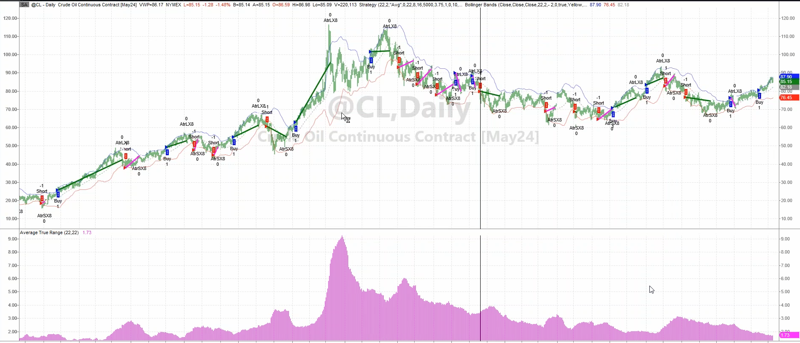
¿Qué hace un trailing? Bueno, un trailing, al final, recordad que va siguiendo el precio. Este es tan simple como la mayoría de los que habéis visto: calculo un periodo de ATR por un multiplicador:
ATRCalc = AvgTrueRange(Periodo_Salida) * C08_NumATRs;El periodo de ATR es más que esto de aquí abajo del gráfico, el histograma, que es el rango de las sesiones media. Le he puesto 22 y no lo he optimizado, pero podría investigar por él.
Aquí hay poco margen porque es diario, pero si juntamos unos cuantos futuros a lo mejor podemos investigarlo un poco. De todas maneras, estaría bien investigarlo, hacer un mapa ahora por ejemplo, para que entendáis.
Explicación del código: casos especiales
Y simplemente aquí hay un código que es un poco más rebuscado que algunos que habéis visto, porque contempla un poco aquellos casos extraños, aquellos casos que se escapan:
If MP = 1 then
begin
if TT <> TT[1] or MP[1] <> 1 or High > PosHigh then
PosHigh = High;
Sell ("AtrLX8") next bar at PosHigh - ATRCalc stop;
end else
Sell ("AtrLX-eb8") next bar at High - ATRCalc stop;
if MP = -1 then
begin
if TT <> TT[1] or MP[1] <> -1 or Low < PosLow then
PosLow = Low;
BuyToCover ("AtrSX8") next bar at PosLow + ATRCalc stop;
end else
BuyToCover ("AtrSX-eb8") next bar at Low + ATRCalc stop;Pero bueno, no sé si vale la pena… bueno, os lo explico un poco, os lo explico un poco. Mira, voy a ponerme el puntero aquí para ir ayudándoos, vale, para que aquellos que no sabéis todavía mucho de programación me vayáis siguiendo, vale.
Esto me interesa que lo entendáis porque esto es buena práctica:
Empezamos aquí: If MP = 1 then, que procesa si
MarketPosition es 1, si estamos largos.
Esto TT, como veis aquí, es TotalTrades.
Esta es una manera muy útil de programación para identificar en qué
barra ha cerrado un trade: TT <> TT[1]. Porque
TotalTrades recoge el número de trades cerrados, de acuerdo, el
número de trades cerrados. De tal manera que, en el momento en que se
cierra un trade, aquí, ¿qué estoy comparando? Yo estoy diciendo:
TotalTrades en la barra actual es distinto de
TotalTrades en la barra anterior. Recordad que, entre
corchetes, a cualquier función o palabra reservada mayoritariamente yo
puedo referirme a su valor en la barra anterior. En EasyLanguage esto es
tan sencillo como hacer eso: TT[1].
💡 TotalTrades: detectar cierre de
operación
TT <> TT[1] solo es true en la barra
exacta donde se ha cerrado un trade, porque TotalTrades
incrementa en ese momento. Es una técnica muy común en EasyLanguage para
detectar cambios de estado.
Entonces, eso ocurre solo en la barra en que ha habido un cierre de trade. Fijaos que esto recoge un caso curioso: cuando se cierra un trade y se abre otro en la misma barra. Porque yo ya parto de que estoy largo, ¿entendido? Parto de que estoy largo. Pero además le pregunto… vale, ahora veréis para qué, que es para actualizar la variable, para empezar a guardarla. Es igual, ahora os explico para qué lo hace.
Desglose de las tres condiciones
Ahora llego yo y os digo: si estás largo, luego le pregunto si además de estar largo —si además de estar largo— o bien el número de trades de esta barra es distinto de la barra anterior. Esto solo puede pasar si se ha cerrado un trade. Pero insisto, estás largo, para que os acordéis: estás largo.
if TT <> TT[1] or MP[1] <> 1 or High > PosHigh then
PosHigh = High;O en la barra anterior MarketPosition era distinto de largo,
es decir, era cero (cerrado) o corto, que es lo normal. Fijaos que esta
condición solo cubre un caso. Normalmente con esto ya valdría. ¿Por qué?
Porque yo le digo: tú estás largo y en la anterior no estabas largo, de
acuerdo, en la anterior no estabas largo. En ese caso, actualiza.
Entonces yo le digo “actualiza”, es decir, dale a la variable
PosHigh el valor del máximo de la vela para inicializar la
variable.
¿Este qué caso cubre? El caso de que en la barra anterior se hubiera
cerrado un largo. Porque si en la barra anterior yo estoy largo,
MP[1] <> 1 no pasaría, este daría false, ¿se
entiende? Daría false. Por eso es uno u otro. En cambio,
TT <> TT[1] se quedaría true, sería
verdadero, porque el número de trades ha cambiado.
Y además también le pide que el máximo sea mayor, porque si el máximo no es mayor que el que tiene guardado, no tiene sentido actualizar la variable. Ya está.
🔍 Las tres condiciones explicadas
if TT <> TT[1] or MP[1] <> 1 or High > PosHigh
then PosHigh = High;
1. TT <>
TT[1] → ¿Se ha cerrado un trade en esta barra?
Cubre: Giro de posición (cierra largo, abre largo en misma
barra)
2. MP[1] <> 1 → ¿En
la barra anterior NO estaba largo?
Cubre: Primera barra de
la posición (caso normal de entrada)
3. High >
PosHigh → ¿El precio ha hecho nuevo máximo?
Cubre: Caso normal del trailing: actualiza para subir
el stop
Si cualquiera de las tres es
true → actualiza PosHigh = High
No profundizo más, pero era simplemente porque este tipo de estructura es bastante usual en EasyLanguage para actualizar variables. Y como ya os paso el código, pues os la podéis guardar, porque recoge algún caso un poco atípico. Recoge un caso, por eso hay tres condiciones:
En cualquiera de esos tres casos, actualiza. En este caso actualiza porque tiene que actualizar siempre que hace un máximo, vale, tiene que inicializarla. En este caso, porque insisto, estás largo. Insisto en que todo esto pasa solo si estás largo. Por lo tanto, si estás largo, me interesa eso: me interesa actualizar si hace máximos.
Pero además, si eso no pasa y pasa cualquiera de los dos casos,
también debo hacerlo. ¿Por qué? Porque lo que estoy identificando es que
acabo de iniciar una posición. ¿Entendéis? Con
High > PosHigh identifico que hago máximos. Con los
otros dos trato de identificar que acabo de abrir, que es la primera
barra. De acuerdo, sea: lo que identifico con estos códigos es la
primera barra, vale, para que se me entienda: esta barra, la primera. Y
ahí, a partir de ahí, es donde me interesa a mí actualizar.
Y a partir de ello calculo el trail que se va actualizando.
Como os digo, a medida que yo hago máximos, cada vez que hago un máximo
donde High es mayor que PosHigh, por tanto
PosHigh vale High. Y automáticamente yo a esa
cantidad le resto el ATR.
Veremos cuando veamos el Chandelier, que es relativamente similar. A ver, es que el Chandelier es relativamente similar. Ese es un poco el trailing clásico. Bueno, le llamamos trailing, pero es que el Chandelier al final es muy similar, muy similar, y por eso os lo quería enseñar.
Os lo enseño un momento ahora. Ya que he hablado del Chandelier: lo que hace es, desde una banda —que en este caso no actualiza—, también desde un máximo de N barras, le resta el ATR. Vale, la particularidad o la única diferencia que tiene es esa: el Chandelier no está condicionado. Su autor en su momento no lo condicionó así: “estás largo, no estás largo, cuándo has entrado”. Es decir, es una banda que está siempre.
ATRCalc = AvgTrueRange(Periodo_Salida) * C12_NumATRs;
BandaSuperior = Highest(High, Periodo_Salida) - ATRCalc;
BandaInferior = Lowest(Low, Periodo_Salida) + ATRCalc;Highest(High, N)
- ATRPosHigh -
ATREn cambio, un trailing empieza a calcularse cuando tú abres. Por eso hay todo ese código que pretende actualizar la variable, de acuerdo. Pretende recoger los máximos desde el momento en que abras. Es decir, insisto, para que se entienda bien —que veo que hay alguna pregunta— vuelvo aquí al trailing número 8, vale, número 8.
Explicación visual del código
Insisto, es para que entendáis un poco la jugada. Empezamos aquí con
If MP = 1. Eso solo es true en este trade. Vamos a
evaluar este trade, vale, este. Eso solo es true en esta barra,
al cierre de esta barra.
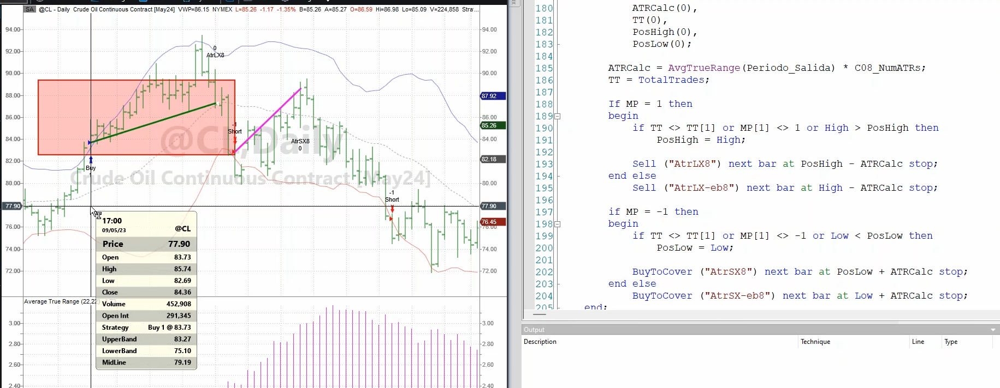
En la anterior es false y no entra, de acuerdo, ahí no entra. Se va a:
end else
Sell ("AtrLX-eb8") next bar at High - ATRCalc stop;Tira un stop —que esto está preparado para lanzarse— para que la vela de entrada tenga stop puesto, vale. Pero el true, el primer true de esta sentencia, es en esta vela.
De acuerdo, entonces ahí es lo que os digo: para iniciar la variable ahí no habría problema, porque como veis el máximo… a ver, esto que creo que está otra vez oscurecido, lo voy a quitar, que nos va a ir mucho mejor. En esa vela donde se compra, fijaos que el máximo es mayor que la vela anterior, con lo cual no hay problema.
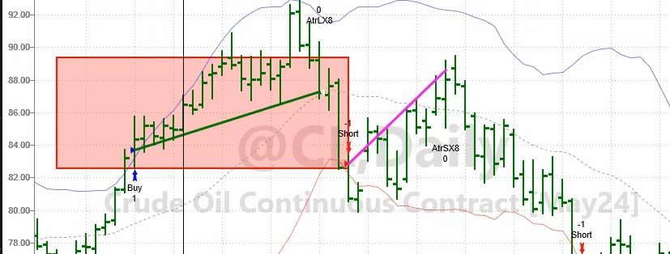
Ahí se hubiera actualizado sin esto también:
TT <> TT[1] or MP[1] <> 1.
El problema: si no hubiera hecho máximos
El problema es si no hubiera hecho máximos. De acuerdo, a mí me interesa igualmente actualizarla porque es la vela en la que yo entro, y a mí me interesa en este tipo de sistemas calcularlo desde que entro. No me interesa desde antes, como hace Chandelier.
Aquí, repito, ha hecho máximos y por lo tanto no hay problema. Pero
hay que contemplar todos los casos. Si no hubiera hecho máximos, vale,
en la anterior, ¿cómo daría? ¿Cómo esto
if TT <> TT[1] or MP[1] <> 1 or High > PosHigh then
sería true para actualizar? Porque tiene que ser true
en esa primera vez, vale. Pues podría ser por
MP[1] <> 1, porque me dice: en la vela anterior,
MarketPosition era distinto de 1. Es verdad, en la vela
anterior MarketPosition era cero. Por lo tanto no hay problema,
no hay problema, ahí actualizaría.
Pero si en la vela anterior hubiera estado largo, vale… ¿y cómo puede ser? Porque podría haber estado largo de otra operación anterior, vale, y el High no ser mayor. Podría haber estado largo y cerrar. Vale, no, pero en ese caso no sería… vale.
Podría tener que ser distinto de largo, vale. Bueno, si es en la vela de entrada, va a ser true. En las siguientes va a ser false, de acuerdo, en las siguientes va a ser false.
Resumen de las tres condiciones
TT <> TT[1] cubre el caso en que cierre y entre en
la misma vela, básicamente. Y MP[1] <> 1 cubre el
caso de la primera barra normal. Y High > PosHigh cubre
la actualización normal y corriente, que es cuando haga máximo. Si no
hace máximos, no tienes que actualizar; se queda guardado con el máximo,
vale.
Pero estas dos primeras pretenden que se actualice igualmente si no hace máximos en esas velas. ¿Por qué? Porque es la vela en la que me interesa estar seguro de que ahí lo identifico. Si no, podría… esas son casuísticas muy, muy especiales. Si yo eso lo anulo, veréis que normalmente hay muy pocos casos donde se da que actúe, vale. Pero de esta manera están contemplados todos los casos.
📖 TotalTrades: Uso del diccionario de
EasyLanguage
Recordad los que tengáis EasyLanguage: el fenomenal uso del
diccionario, que yo os recomiendo siempre tenerlo aquí a la derechita.
Le pones aquí EasyLanguage, le pones aquí TotalTrades, si lo
pones junto te dará TotalTrades, y ya tienes ahí la
explicación:
“Number of all closed out trades in the life of a
strategy”
Un ejemplito, y además te sale el botoncito para abrir la ayuda y
obtener más ayuda. En este caso no hay mucho que ayudar porque es lo que
es: el número de trades. Es extremadamente útil.
Trailing y actualización continua
Entonces, ya está. El trailing al final simplemente va actualizando a medida que el precio sube. Para que lo entendáis, como tengo aquí el Chandelier puesto, lo voy a activar
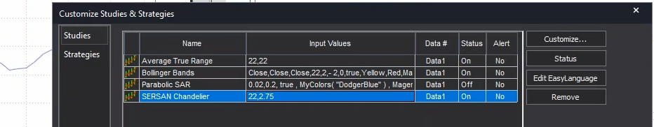
—que no es exactamente ese porque actualiza todo el rato— pero ese es el cálculo del Chandelier, vale. Que al final, para largos y para cortos, de acuerdo: el azul me va poniendo el stop de los largos, el rojo me va poniendo el stop de los cortos.
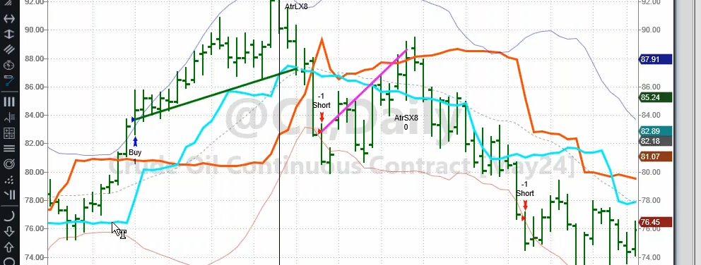
Así es un poco raro de ver, pero puedo ocultar una de ellas un momento para que así… a lo mejor es más fácil de entender. Vale, ese es el stop de los largos. ¿Por qué? Porque le resto al máximo el ATR. No olvidéis que al final le resto al máximo, al máximo de N barras menos el ATR. Por eso va siguiendo al precio, de acuerdo.
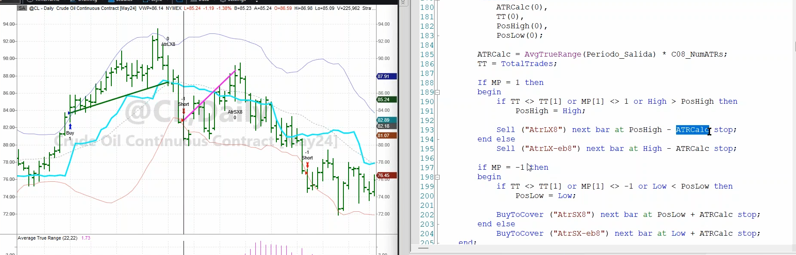
Esta línea azul que veis es un típico trailing por ATR, vale, es un típico trailing por ATR, que es el que recogemos en el número 8, solo es el 8. Que no va mal, no va mal por cierto, vale. Y se adapta a la volatilidad, de acuerdo. Es decir, esto si tú lo miras en todo el histórico, al final se va adaptando a la volatilidad. Es algo bastante, bastante intuitivo.
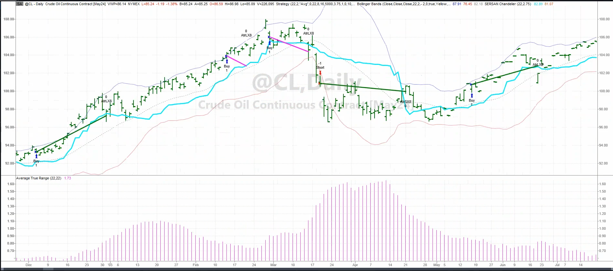
El histórico, como veis, está hecho polvo, pero es igual, nos da igual ahora. Siempre va siguiendo al precio por debajo. Llega un punto que deja de tener sentido. Porque al final recoge el máximo de unas barras atrás —en este caso pues debe estar en 22— y le resta una cantidad. Entonces llega un punto que no tiene sentido: cuando ya lo cruza, debería de dejarse de pintar, eso se puede hacer por código, pero no lo hemos hecho. Esto deberíamos, en este momento cuando lo perfora, dejar de pintarlo Para hacerlo bien hecho
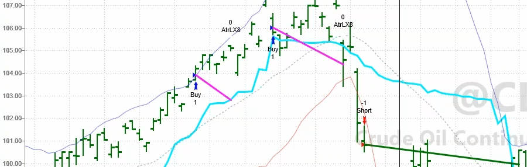
por código se puede hacer eso: solo pintarlo cuando sea superior, cuando su valor sea inferior al mínimo, de acuerdo. Al mínimo. Y el del corto pues lo mismo pero al revés, de acuerdo.
Si queréis, oscurezco un momento este para que lo veáis más claro. Ahí, ahí tenéis un poco la contraria. Ves que aquí solo tendría sentido pintarlo cuando el máximo esté por debajo, de acuerdo.
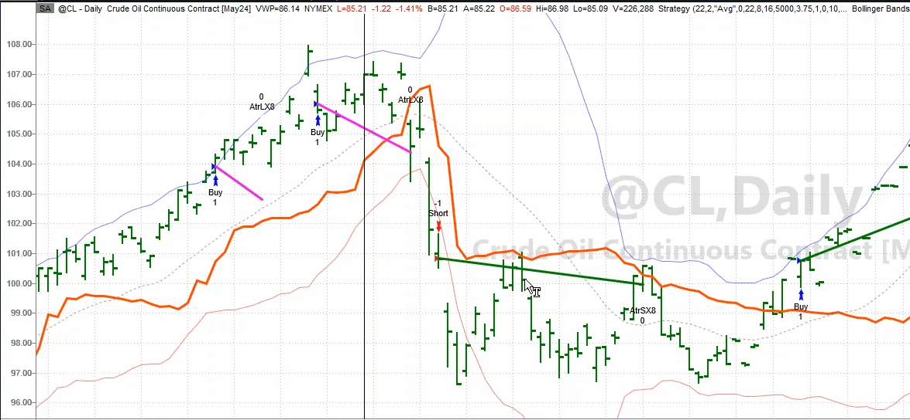
En el momento que el máximo ya esté por encima de esa línea, pues no la deberíamos de pintar porque es absurda.
Vamos a la derecha, que es el gráfico un poco más decente, vale. Y ahí está ese tema marcando un poco las líneas donde salta el stop, vale, el stop de los cortos. En este caso sí que la vamos a poner un poquito transparente, no, porque así cuando lo pongamos no molesta tanto. Ahí está, ahora la voy a ocultar.
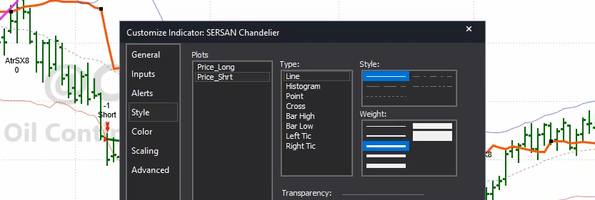
Y este, como os digo, pues es el stop de salida trailing, que es un stop tipo trailing. Solo tenía esta, esta era la número 8.
case 11
Salida combinada : Combinación Trailing + Take ProfitEn la 11 además hemos incorporado que además puede cerrar por take profit.
# Trailing ATR + Profit ATR
case 11:
Input: # Input: Periodo_Salida(14), C11_NumATRs_01 ( 2.5 ), C11_NumATRs_02 ( 4.75 );
C11_NumATRs_01 ( 7.75 ),
C11_NumATRs_02 ( 7.25 );Que pueda cerrar por take profit, que no sea tendencial puro… esto necesito aclararlo porque también me ha llegado un comentario. Es decir, cuando digo que un tendencial puro no tiene que tener take profit, no quiero decir que no haya que ponerle take profit a los tendenciales, de acuerdo?. Si quieres que sea puro, yo recomiendo no ponerlo. Pero también puede ser tendencial con take profit.
Y si tienes nuevamente lo que decía antes de la cartera de las materias primas, pues a lo mejor estaría bien mezclar: alguno con que lo tenga, otro que no lo tenga. De acuerdo?, esa también es una diversificación muy útil. En este caso, un sistema lo usaría con un trailing, otro con take profit. ¿Por qué? Porque al final, contra más tendenciales, más pasa este efecto que decía aquí Alejando en el ejemplo, más pasa:.
Entonces al final, todo tiene lo bueno y todo tiene lo malo. Entonces si yo quiero tener varios, pues a lo mejor en uno lo hago tendencial puro, pero luego otros algo tendencial, no tan puros. ¿Por qué? Porque los voy estabilizando. Contra más bajo el take profit, ya os lo comenté, estabiliza mucho los sistemas.
Stop y Take Profit fijos vs. adaptativos
Es decir… mira, ya veréis, tengo salida por stop y profit por ATR
case 6: # Profit ATR
Input: # Input: Periodo_Salida(14), C06_NumATRs(3);
C06_NumATRs ( 13.5 );Profit por ATR número salida 6 y
periodo salida pongo 22 a todos
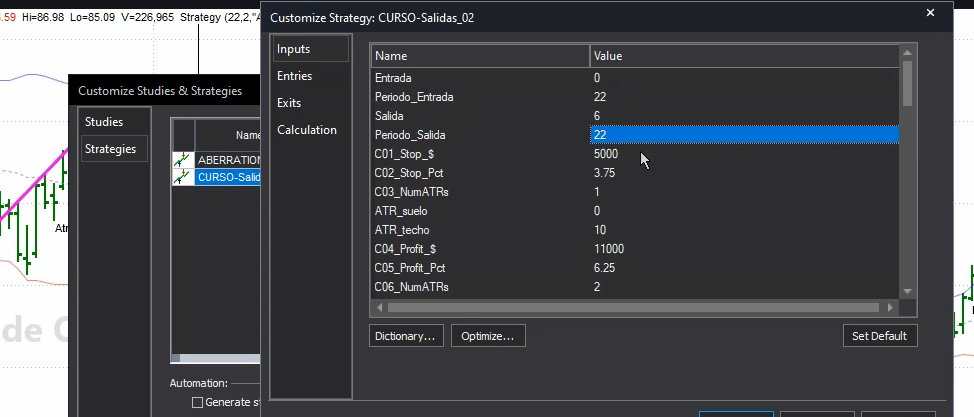
Mira, vamos a optimizar un momento por curiosidad. Es igual, es por jugar. Yo qué sé, esto que es profit ATR, y le ponemos de 0.25 a 25… no, va a ser muy alto. Yo qué sé, de 5 a 15 o que de 0.50 o algo. Eso es un momento, para jugar, para ver un poco.
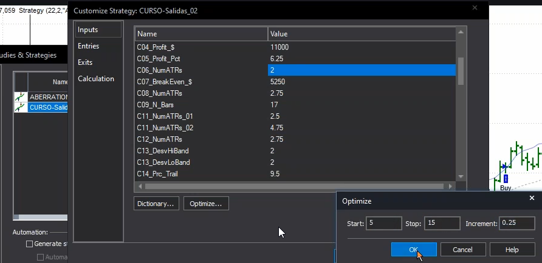
Resultados de optimización
Ahora lo hemos dado aquí al optimizador, y lógicamente es un punto de sobre-optimización probablemente, pero bueno, que nos da igual, que es para jugar un poco con el tema. Y ahí vemos que hemos conseguido un sistema súper top, hemos mejorado muchísimo lo que había.
Y este es seguramente de los mejores que hay. ¿Por qué? Porque al final es un tendencial, no le dejo salir con la media ahora, no os olvidéis.
Y por lo tanto pues bueno, le deja el take profit muchas veces muy, muy arriba, bueno 5, de hecho no es que sale… seguramente aquí tiene drawdown más elevado, este todos van a tener drawdowns muy fuertes porque no le hemos dejado quitar el drawdown de ninguna manera. ¿Entendéis? Ya no le hemos dejado más que ganar dinero. Entonces gana mucho dinero, pero debe tener unos drawdowns bastante bestias. Seguramente es de los que más gana este, pero también es de los que más drawdown tiene, seguro. ¿Por qué? Porque no puede salir más que girándose, vale, no puede salir más que girándose. Entonces debe tener alguna enganchada.
Tiene que tener muy buenos pero una enganchada como estas, bastante macabra. Y tendrá peores. Era una enganchada espectacular. ¿Por qué? Porque no se va a poder cerrar hasta que tenga una señal contraria. Bueno, no le he dejado salir de ninguna manera, vale. Pero claro, así cuando pilla tendencia —que ya sabéis que las materias primas, mira el oro ahora — luego lo podemos probar también en el oro diario y seguramente nos va a ir bien también. Luego lo probamos.
Y porque solo le dejamos por profit. Entonces yo esto puedo usarlo en un tendencial, que es esto. Si no, pasa nada. Pero veréis que sus ratios de acierto siendo inferior a 50, casi con total seguridad… no, ya es por encima de 50. Pensaba que aún así aguantaría, bueno, porque al final le ha quedado un valor relativamente bajo.
Si le hubiera puesto más alto, es decir, si en vez de 5, en vez de 5 pues yo qué sé, le hubiera puesto otro valor que equilibre mejor en alguna otra cosa, que no sé si lo va a haber… no, creo que lo haya, al final ninguno equilibra mejor en nada, ninguno equilibra mejor en nada, vale.
Que sería ese, claramente, pero es igual. Que lo hubiera puesto 11… Imagina que lo hubiera puesto 11 (hago click en 11), por allá lo veis. Aquí, aquí creo que sale el porcentaje de aciertos… no sale aquí, no sale. Bueno, se puede ver aquí: 57.76%. No, todos son muy altos, todos son muy altos, todos son muy altos. La verdad que me sorprende, esperaba que tuviera menos porcentaje de aciertos al ponerle take profit.
Pero fijaos, ya lo deja… lo convierte en bueno, sigue siendo tendencial pero ya su carácter es menos tendencial
porque ya no acierta tanto… porque su porcentaje de aciertos ya es muy elevado. También en este caso casi con total seguridad es un poco fruto de sobre-optimización, fruto de sobre-optimización. Que eso también es señal sospechosa de que un sistema no rula, que hay ratios que no esperas.
Pero bueno, para que veáis el ejemplo que os decía.
Esa tiene trailing, además take profit. Va a hacer take profit en algunos momentos, pero se protege mediante el trailing, que lo mantiene pegadito ahí.
Todos estos, ya digo, en general todos aseguro que ganan bien. Ganan bien porque son salidas que van muy bien al tendencial: lo dejan correr. Fijaos, este al final lo ha dejado más acompañado.
¿Por qué? Porque sale por take profit y además tiene un nivel que lo protege, lo protege de las vueltas. Entonces este ya no tiene enganchadas, ya no tiene enganchadas; prácticamente ya la cosa mejora. Este es trailing con profit; ese está bastante bien. ¿Por qué? Porque al final, cuando uno habla de stop y take profit al uso, tened en cuenta que son stops que van mejor en los antitendenciales, vale. Yo, en un tendencial, necesito acompañar al precio. Porque si yo quiero que corra mucho, ¿qué sentido tiene que el stop lo ponga en la entrada?
Stop y Take Profit porcentuales: Case 16
Al final, un stop, sea monetario o sea porcentual… mira, tengo el porcentual y monetario. Lo tengo en el caso 16, ahora os lo enseño. Lo tengo en el 16.
case 16: # Stop% + Profit% - Input: C16_Stop_Pct(2), C16_Profit_NxStopPct(1);
Input:
C16_Stop_Pct ( 2.25 ), # en tanto por 100
C16_Profit_NxStopPct ( 0.7 );Entonces yo, con stop y un profit porcentuales, solo puedo salir por eso… y por el giro, claro. ¿Qué pasa? Pues es muy errático, porque al final no le estoy dejando al sistema salir de ninguna manera.
Si aquí yo…
C16_Stop_Pct ( 4.75 ),
C16_Profit_NxStopPct ( 2.25 );Si lo hago así…
C16_Stop_Pct ( 4.75 ),
C16_Profit_NxStopPct ( 1 );Como esto, el C16_Profit_NxStopPct(), es
multiplicador:
Lo he dejado stop y take profit simétrico. Tengo una entrada que es tendencial, pero le he obligado a que tenga una salida antitendencial.
Análisis de ratios: simétrico vs. asimétrico
Ahora me da ratios por encima del 50%; en concreto,
51,98%. El otro me daba 37,50% porque era un
tendencial; ahora lo he vuelto a tendencial. Aun así me da 52%, que me
está diciendo que alguna ventaja tiene, pero es muy justita, muy
justita, puesto así.
Pero ahí estoy poniendo stop y take profit simétrico. Acordaos que esto os lo dije, que es una manera de evaluar a veces ventajas. Pero sobre todo en el caso antitendencial; también puede servir aquí para evaluar un poco la entrada, vale. Porque yo me estoy saliendo de manera simétrica.
Pero esto, para que se entienda, quiere decir que yo… cuando el
precio sube, el precio cae un porcentaje que nos dijera un
4.75, y que ahora lo pongo en un 5 para
redondear. Tiene un stop del 5% y un TP del 5%. Cuando tiene un
stop de un 5% y un take profit de un 5%, según uno, lo
que hace es el multiplicador del mismo: 5 y 5.
Claro, al final es justito. Así es muy justito, porque esa es una salida más apta para tendencial. ¿Mejorará? Sí, mejorará, claro que mejorará. Pero como yo ahora le he quitado la salida… así, dejándole su salida de media, tendría cierto sentido. Pero quitándole esa salida, tiene muy poco sentido, ¿entendéis?
🎯 Configuración del multiplicador de
Profit
C16_Stop_Pct → Porcentaje de stop (ej: 5 =
5%)
C16_Profit_NxStopPct → Multiplicador del
stop para el profit
• Si NxStopPct = 1 → Profit = Stop (simétrico, 1:1)
• Si NxStopPct = 2 → Profit = 2× Stop (asimétrico, 1:2)
• Si NxStopPct = 3 → Profit = 3× Stop (asimétrico,
1:3)
Reflexión: sentido común en las salidas
Esto es lo que hablaba en la ponencia de Robotrader. Yo os dije que la enseñaría aquí hoy. Era esto, era reflexionar y entender la que ya he hablado de sentido común, que a veces es fruto —muchas veces— de la experiencia: de buscar las cosas que tienen sentido para cada tipo de entrada. Entonces, si yo al final busco tendencia, no tiene sentido poner un stop y un take profit al uso, a no ser que tenga la otra salida.
Mejora con Take Profit asimétrico
Ahora le pongo 2, vale, y el profit es 10%. Ahora le he puesto 10%.
Ahora ya se vuelve más tendencial y ha mejorado un poco; mira el Profit Factor, este y el anterior. ¿Por qué? Porque es un activo que quiere tendencia, porque tiene muchas colas largas. Entonces las colas largas tienen que pagar los fallos. Tienen que hacer estos grandes tricks para pagar los fallos.
Ya ha caído del 50% de aciertos y es un típico tendencial. Así tengo que hacerlo, así. Sí, puedo hacerlo, pero aun así seguramente no es eficiente. ¿Por qué? Porque pone TP y SL donde toca y se olvida. Y ya está. Y le da igual lo que haga el precio, vale.
La diferencia con el Trailing
Esa es la diferencia con un trailing. Un trailing es un poco como la media: la media va subiendo. Por eso es lo que os decía: si yo activo la media, va a mejorar. ¿Por qué? Porque la media al final me está haciendo de trailing, ¿entendéis? Me está haciendo de trailing.
Entonces, si yo quiero usar ese tipo de stops, mejor que deje activada la salida del sistema, que probablemente mejore. Bueno, ahora habrá que ver si el take profit queda demasiado lejos y tal. Pero solo con eso ya ha mejorado.
Pues ya ha mejorado. ¿Por qué? Porque cuando vuelve, veis aquí qué pasa en el trade azul del pico… Este que ha vuelto, pero la media lo saca. La media le hace de trailing, vale.
En un tendencial no tiene sentido que yo vaya stop y profit si no tengo otra salida. Insisto, pues ahora vuelvo a desactivar la media, porque así entendemos bien las salidas, vale. Vamos en bruto en este ejercicio hoy de completo de salidas.
Que al final, como sabéis y se dice, es muy, muy importante y marca mucho el carácter y el perfil de un sistema. Porque al final es lo que ejecuta la ganancia, la pérdida. Aunque todo es importante, lógicamente.
💡 Principio fundamental
• La ventaja la da la entrada
• La
salida es lo que acaba de materializar el resultado
Case 16
Salida porcentual: Stop% + Profit%Yo tengo los inputs y simplemente le digo: si
MarketPosition es distinto de cero, vale, es distinto de cero,
lanza un SetStopLoss. Porque esto… tengo una palabra reservada
que me lo calcula y me ayuda mucho:
SetStopLoss(EntryPrice * C16_Stop_Pct / 100 * Bigpointvalue);.
Si no, pues puedo calcularlo de otra manera, de acuerdo, puedo
calcularlo, vale.
Pero en EasyLanguage tiene una palabra reservada que es esto, que no sé… diccionario, diccionario. Es que no sé si lo pregunto… a ver, si no, no se lo pregunto. A ver si lo busco aquí, lo leo, y entonces si después de leerlo y tal no lo entiendo, le pregunto. Lo primero, lo busco, porque de verdad, la manera… eso es lo que hablaba varias clases: de la teoría, el carácter del cuantitativo algorítmico exige esto, exige esta inquietud. Si no, os va a costar mucho. Exige esta inquietud de la búsqueda, del análisis, de entender las cosas, vale. No ir a lo fácil simplemente, de acuerdo. Hay que entender, hay que tener las cosas y buscarlas.
Y ya digo, una de las cosas buenas que tiene TradeStation es su fantástica ayuda, de verdad, que es de las mejores. Está todo normalmente muy bien explicado. Aquí es lo que digo: es un built-in stock reservoir. Los que tenéis el curso de EasyLanguage, que sois la mayoría, pues ya está, está ahí explicado, y lo explico más en detalle. Pero que también la ayuda viene bien.
case 16: //Stop% + Profit% - Input: C16_Stop_Pct(2), C16_Profit_NxStopPct(1);
begin
Input:
C16_Stop_Pct ( 2.25 ), # en tanto por 100
C16_Profit_NxStopPct ( 0.7 );
SetStopShare;
If MP <> 0 then
begin
SetStopLoss (EntryPrice * C16_Stop_Pct / 100 * Bigpointvalue);
SetProfitTarget (EntryPrice * (C16_Stop_Pct * C16_Profit_NxStopPct) / 100 * BigPointValue);
end else
begin
SetStopLoss (Close * C16_Stop_Pct / 100 * Bigpointvalue);
SetProfitTarget (Close * (C16_Stop_Pct * C16_Profit_NxStopPct) / 100 * BigPointValue);
end;
end;Cálculo del Stop porcentual
Al final tú puedes sacar ahí un valor monetario directamente, al uso,
500 o 1.000. O un cálculo, que es lo que hacemos aquí: un cálculo
SetStopLoss(EntryPrice * C16_Stop_Pct / 100 * Bigpointvalue);.
Esto al final acaba siendo dinero, pero ¿cómo se calcula? Se calcula
multiplicando el precio de entrada por un porcentaje —que está en tanto
por cien, un 2%, un 3%—, lo divido por 100 porque para multiplicarlo por
el precio de entrada, y lo multiplico por BigPointValue, que es
lo que convierte puntos en dinero. Es lo que convierte puntos en dinero.
Y ya está, ya con eso ya me tira el stop del precio que
quiero.
Y el SetProfitTarget es igual:
SetProfitTarget(EntryPrice * (C16_Stop_Pct * C16_Profit_NxStopPct) / 100 * BigPointValue);,
pero veis que además multiplico el stop percent por esa
variable que os decía, que es múltiplo de él. Si esa variable vale 1,
pues son iguales. Si esa variable vale 2, pues el doble. Ese número que
da se divide por 100, se multiplica, y lo mismo.
🔢 Fórmula del Stop porcentual
SetStopLoss = EntryPrice × (Stop% / 100) ×
BigPointValue
• EntryPrice → Precio de entrada de la operación
• Stop% → Porcentaje deseado (ej: 5 = 5%)
•
BigPointValue → Convierte puntos a dinero (valor del
tick × multiplicador)
El problema de la barra de entrada y EntryPrice
Y esto que veis aquí detrás del else:
end else
begin
SetStopLoss (Close * C16_Stop_Pct / 100 * Bigpointvalue);
SetProfitTarget (Close * (C16_Stop_Pct * C16_Profit_NxStopPct) / 100 * BigPointValue);
end;Es porque aunque SetStopLoss se usa… lo explico porque puede generar confusión, porque aquellos que no tengáis mucha experiencia digáis: “Coño, pero si es que SetStopLoss y ProfitTarget a mí me has dicho en el curso de EasyLanguage que es un stop que va en la barra de entrada”.
Y te digo: tienes razón, es cierto, va en la barra de entrada, vale.
“Y me dices: es porque me pones este bucle
If MP <> 0 then de ‘si es distinto de cero’ y luego
me pones que cuando no”, es decir, cuando es cero,
end else.
Esta parte de aquí se calcula solo cuando está cerrado. ¿Qué sentido tiene calcularlo cuando está cerrado?
# Se calcula solo cuando está cerrado
end else
begin
SetStopLoss (Close * C16_Stop_Pct / 100 * Bigpointvalue);
SetProfitTarget (Close * (C16_Stop_Pct * C16_Profit_NxStopPct) / 100 * BigPointValue);
end;El sentido es que, cuando entra, tened en cuenta cómo se procesa el código, muy breve, porque eso no es… Cuando yo abro esta posición, hasta que no cierre la barra no se leerá MarketPosition igual a 1, vale.
Por lo tanto, las órdenes que se tienen en esa barra se han calculado en la anterior, vale.
Es decir, todo lo que se tira en la barra que estamos comprados se ha calculado en esta de la imagen que marco. Por lo tanto, el stop no se ha calculado, porque esta barra era 0; MarketPosition en esta barra era cero, no era 1. Cuando esta cierre —la que está larga, donde estaba— y cuando esta cierre, MarketPosition será 1, pero el anterior era cero, MarketPosition. Por lo tanto, no hay stop en esa barra en teoría.
Como hay esto, ¿con esa barra? Con esto hay stop en esa barra:
end else
begin
SetStopLoss (Close * C16_Stop_Pct / 100 * Bigpointvalue);
SetProfitTarget (Close * (C16_Stop_Pct * C16_Profit_NxStopPct) / 100 * BigPointValue);
end;⚠️ El problema de EntryPrice en la barra de
entrada
En EasyLanguage, las órdenes se calculan al cierre de cada
barra para ejecutarse en la siguiente. Esto genera un
problema:
Barra de señal (MP=0): Se calcula el stop →
pero EntryPrice = 0 (aún no hay entrada)
Barra
de entrada (MP=1): Ya hay entrada → pero el stop se
calculó en la barra anterior
Close en vez de
EntryPrice cuando MP = 0, así la barra de
entrada tiene stop aunque EntryPrice aún no esté
disponible.
¿Por qué no sacarlo fuera del if?
Y tú, que eres un alumno avanzado y que te has estudiado muy bien el EasyLanguage, podrías decirme: “Joder, vaya, pero llegar a estas alturas… ¿por qué no lo sacas del MarketPosition y se acaba el problema? No, pues no lo pongas, directamente abajo del código”. Que muchos códigos lo hacemos así, lo habéis visto, solo por una cosa.
Si tienes que usar EntryPrice, vale, si tienes que usar EntryPrice, tienes que hacer esto. ¿Por qué? Porque EntryPrice en esa barra te va a dar cero, y entonces se te va a romper, se te va a romper, no te va a calcular bien.
Y esto, si queréis, lo demuestro un momentito. Haciendo así:
# Comentado el if para demostrar el problema
# If MP <> 0 then
# begin
SetStopLoss (EntryPrice * C16_Stop_Pct / 100 * Bigpointvalue);
SetProfitTarget (EntryPrice * (C16_Stop_Pct * C16_Profit_NxStopPct) / 100 * BigPointValue);
# end else
# begin
# SetStopLoss (Close * C16_Stop_Pct / 100 * Bigpointvalue);
# SetProfitTarget (Close * (C16_Stop_Pct * C16_Profit_NxStopPct) / 100 * BigPointValue);
# end;Dejando solo el stop normal, vale. Dices: “Así, lo normal, si no voy a usar EntryPrice podría dejarlo así”, vale, sin MarketPosition. Pero ahora… y ahora voy a compilar esto, voy a tratar de abrir aquí el gráfico lo máximo posible que se me vean algunas varias operaciones, y voy a compilar.
Veis, se ha roto, ya no está haciendo lo que tiene que hacer, vale. No está haciendo lo que tiene que hacer. ¿Por qué? Porque EntryPrice muchas velas no calcula bien, de acuerdo. EntryPrice no calcula. Si esto fuera cierre, entonces sí. Pero claro, entonces no lo calcularía del precio de entrada, y lo quiero calcular realmente sobre el precio de entrada. Tengo que hacer esta martingala, vale.
Caso simple: Stop monetario fijo
Si aquí yo pusiera 10.000 directamente, no hace falta. De hecho, por ejemplo aquí:
case 1: //Stop $ - Input: C01_Stop_$(1000);
begin
Input:
C01_Stop_$ ( 4000 );
Setstopcontract;
SetStopLoss(C01_Stop_$);
end;Es así, punto. Da igual si está largo, si está corto, si está pensionista, si lo que sea, no importa. En ese caso es porque yo quiero usar la barra… calcularlo de EntryPrice, ¿se entiende, verdad?
Venga, seguimos.
case 20
Salida combinada : Chandelier + temporalHemos visto antes por encima Chandelier. Bueno, por encima y no tanto por encima. Es decir, Chandelier al final no deja de ser un trailing, vale. Lo tenemos combinado. Hemos hecho un Chandelier solo, hemos hecho un Chandelier con salida temporal, vale. Hemos hecho varias, varias opciones, vale. Varias opciones.
case 20: //Chandelier + temporal - Input: C20_StopPriceCanDecrease(0), C20_StopPriceCanIncrease(0), Periodo_Salida(14), C20_NumATRs(3), C20_N_Bars(10);
Begin
Input:
C20_NumATRs ( 5 ),
C20_N_Bars ( 59 );
ATRCalc = AvgTrueRange(Periodo_Salida) * C20_NumATRs;
BandaSuperior = Highest (High, Periodo_Salida) - ATRCalc;
BandaInferior = Lowest (Low, Periodo_Salida) + ATRCalc;
Sell ("Cxn_Lng_20") next bar at BandaSuperior stop;
Buytocover ("Cxn_Shr_20") next bar at BandaInferior stop;
If BarsSinceEntry >= C20_N_Bars then
begin
Sell next bar at market;
BuyToCover next bar at market;
end;
end;Aquí, una de las cosas que sí puedes hacer —lo que pasa que claro hay que tener en cuenta que yo ahora antes sí que lo he dimensionado, ahora creo que he tocado alguno, entonces, una de las cosas que sí puedes hacer, pero claro, tienen que tener sentido las variables, es colocarlo…
Sí que puedes hacer una pequeña búsqueda así rápida en las salidas. Vamos a ver de 0 a 32 cómo va, vale.
Pero insisto, si no le has dado a los inputs un cierto sentido, es complicado. Tiene que tener cierto sentido.
Pero sí que puedes, por ejemplo, igualar todos los stops porcentuales., monetarios…, siempre los trades , a hacer un pequeño montaje previo. Dedicarle 15 minutos a dejarlos todos iguales, vale. Proporcionales. En un tendencial pues ya eso que te digo:
es decir, todos de manera homogénea, vale.
Y entonces paso la búsqueda directa de todos, y así veo por dónde van los tiros, de acuerdo. no Quiere decir que directamente con eso me quede. Pero ahora yo puedo mirar, vale, automáticamente con la optimización cuáles han dado mejor valor.
Aquí veo que el número 18, el número 11, etc. * El número
18 pues es el Chandelier con profit porcentual, oh
sorpresa. * 11 es trailing ATR con profit
ATR, oh sorpresa. * El número 24 es profit
porcentual con break-even.
Bueno, pues este era… este es muy interesante, vamos a trabajarlo :
click al 24
case 24 Salida por
Break-EvenBueno, pues este era… este es muy interesante, este lo vamos a trabajar ahora. ¿por qué? Porque cubre la salida. antes decía el profit porcentual… ¿Qué problema tiene el profit* porcentual? Que no tiene ningún trailing. Claro, el break-even le hace trailing y le llega a compensar. Él dice: “Oye, a mí hazme take profit, y cuando falle, con que me cierre cuando vuelva… con que me cierre a precio de entrada, ya me vale”.
El 24 hace exactamente eso.
Tiene un take profit que no sé cuánto está puesto —ahora lo miro—. Ves, tiene un take profit que muchas veces se ejecuta lógicamente.
Cuidado porque hay lineas en rojo… ah, vale, hace stop and reverse, claro, hace stop and reverse, porque va a la banda contraria. Cuando acumula cierto beneficio… entonces… claro…. también es un tema importante ¿cuánto beneficio le he puesto al break-even?, ese también es un tema importante.
Pero mira, vamos hacer el ejercicio de dejarlo todo bastante homogeneo
Pero bien, vamos a hacer un poco este ejercicio que os decía: de
dejarlos pues más o menos coherentes.
Voy a configurar todos los cases para que sean redondos y
coherentes igulando todo lo que pueda
| Input | Valor | Descripción | Cuándo usarlo |
|---|---|---|---|
| Inputs Generales | |||
Periodo_Salida |
22 | Período para cálculos (ATR, medias, etc.) | Base para todos los cálculos adaptativos |
| Stops simples | |||
C01_Stop_$ |
8500 | Stop monetario (\() | Intradía o activos
con precio estable |
| `C02_Stop_Pct` | 4 | Stop porcentual (%) | Activos con variación de
precio histórica |
| `C03_NumATRs` | 1 | Stop por ATR (multiplicador) | Adaptarse a
volatilidad cambiante |
| `ATR_suelo` | 0 | ATR mínimo | Evitar stops demasiado cercanos en baja
vol |
| `ATR_techo` | 10 | ATR máximo | Evitar stops demasiado lejanos en alta
vol |
| **Profits simples** | | | |
|
`C04_Profit_\)| 11000 | Profit monetario ($) | Objetivos fijos en intradía | |C05_Profit_Pct| 6 | Profit porcentual (%) | Objetivos proporcionales al precio | |C06_NumATRs| 1 | Profit por ATR (multiplicador) | Objetivos adaptativos a volatilidad | | **Breakeven, Trailing, Tiempo** | | | | |C07_BreakEven_\(` | 5000 | Breakeven monetario (\)) |
Proteger entrada tras ganancia mínima |
C08_NumATRs |
1 | Trailing ATR (multiplicador) | Tendenciales que necesitan dejar correr |
C09_N_Bars |
15 | Salida temporal (barras) | Limitar exposición, evitar decaimiento |
| Combinaciones Trailing + Profit | |||
C11_NumATRs_01 |
2 | Trailing ATR (componente trailing) | Tendencial con protección + objetivo |
C11_NumATRs_02 |
4 | Trailing ATR (componente profit) | Captura grandes movimientos con red de seguridad |
C12_NumATRs |
1 | Chandelier (multiplicador ATR) | Trailing sin depender del momento de entrada |
C13_DesvHiBand |
2 | Bollinger banda contraria (desv. sup.) | Salida en sobrecompra/sobreventa |
C13_DesvLoBand |
2 | Bollinger banda contraria (desv. inf.) | Mean reversion con bandas |
C14_Prc_Trail |
9 | Trailing porcentual (%) | Trailing simple sin calcular ATR |
| Stop + Profit combinados | |||
C15_Stop_$ |
8500 | Stop$ + Profit$ (stop) | Gestión de riesgo fija en intradía |
C15_Profit_NxStop |
1.5 | Stop$ + Profit$ (multiplicador profit) | Ratio riesgo/beneficio definido |
C16_Stop_Pct |
4 | Stop% + Profit% (stop) | Ratio R:B proporcional al precio |
C16_Profit_NxStopPct |
2 | Stop% + Profit% (multiplicador profit) | Fácil ajuste de asimetría ganancia/pérdida |
C17_NumATRs |
1 | Stop ATR + Profit ATR (ATRs) | Ratio R:B adaptativo a volatilidad |
C17_Profit_NxStopATR |
1.5 | Stop ATR + Profit ATR (multiplicador) | El más robusto para activos volátiles |
| Combinaciones con temporal | |||
C18_NumATRs |
1 | Chandelier + Profit% (ATRs) | Tendencial con objetivo y trailing |
C18_Profit_Pct |
6.25 | Chandelier + Profit% (profit) | Captura parcial + dejar correr |
C19_Stop_Pct |
4 | Stop% + temporal (stop) | Limitar pérdida y tiempo en mercado |
C19_N_Bars |
15 | Stop% + temporal (barras) | Antitendencial con salida por tiempo |
C20_NumATRs |
1 | Chandelier + temporal (ATRs) | Tendencial con límite de tiempo |
C20_N_Bars |
15 | Chandelier + temporal (barras) | Evitar operaciones que no arrancan |
C21_DesvHiBand |
2 | Bollinger + temporal (desv. sup.) | Mean reversion con timeout |
C21_DesvLoBand |
2 | Bollinger + temporal (desv. inf.) | Salida por banda o por tiempo |
C21_N_Bars |
10 | Bollinger + temporal (barras) | Operaciones rápidas en rango |
| Bollinger + Stop, Parabolic SAR | |||
C22_DesvHiBand |
2 | Bollinger + Stop% (desv. sup.) | Mean reversion con protección |
C22_DesvLoBand |
2 | Bollinger + Stop% (desv. inf.) | Salida técnica + stop de seguridad |
C22_Stop_Pct |
2 | Bollinger + Stop% (stop) | Limitar pérdida si la banda no llega |
C23_AfStep |
0.02 | Parabolic SAR (step) | Trailing clásico que acelera con tendencia |
C23_AfLimit |
0.2 | Parabolic SAR (limit) | Controlar agresividad del SAR |
| Profit/Stop + Breakeven | |||
C24_Profit_Pct |
6 | Profit% + BreakEven$ (profit) | Objetivo fijo + proteger entrada |
C24_BreakEven_$ |
5000 | Profit% + BreakEven$ (breakeven) | Psicológicamente cómodo: no perder |
C25_Stop_Pct |
4 | Stop% + BreakEven$ (stop) | Stop inicial + mover a BE tras ganancia |
C25_BreakEven_$ |
5000 | Stop% + BreakEven$ (breakeven) | Reducir riesgo tras movimiento favorable |
C26_Profit_Pct |
6 | Profit% + BreakEven% (profit) | Todo proporcional al precio |
C26_BreakEven_Pct |
5.25 | Profit% + BreakEven% (breakeven) | Más robusto para distintos activos |
C27_Stop_Pct |
4 | Stop% + BreakEven% (stop) | Gestión porcentual completa |
C27_BreakEven_Pct |
2.5 | Stop% + BreakEven% (breakeven) | BE cercano para proteger rápido |
C28_BreakEven_Pct |
2.5 | BreakEven% solo | Solo mover stop a entrada, sin TP |
| Combinaciones triples | |||
C29_Stop_Pct |
4 | Stop% + Profit% + BE% (stop) | Gestión completa porcentual |
C29_Profit_Pct |
6 | Stop% + Profit% + BE% (profit) | Sistema con las 3 protecciones |
C29_BreakEven_Pct |
4 | Stop% + Profit% + BE% (breakeven) | Máxima gestión de riesgo |
C30_Stop_$ |
8500 | Stop$ + Profit$ + BE$ (stop) | Gestión completa monetaria |
C30_Profit_$ |
11000 | Stop$ + Profit$ + BE$ (profit) | Intradía con control total |
C30_BreakEven_$ |
5000 | Stop$ + Profit$ + BE$ (breakeven) | Valores fijos conocidos |
C31_NumATRs |
1 | Stop ATR + Profit ATR + BE% (ATRs) | Lo más adaptativo posible |
C31_Profit_NxStopATR |
1.5 | Stop ATR + Profit ATR + BE% (mult.) | Combina volatilidad + protección |
C31_BreakEven_Pct |
2.5 | Stop ATR + Profit ATR + BE% (BE) | El más robusto de todos |
Pues ya está.
| Aspecto | ¿Homogéneo? | Acción |
| Multiplicadores (NxStop) | ✅ Bien | Poner todos a 2 para 1:2R |
| Stops % | ❌ 1.5%→6.75% | Unificar a 4% |
| NumATRs | ❌ 3→14 | Unificar a 2 |
| N_Bars | ❌ 10→79 | Unificar a 15 |
| BreakEven | ❌ Dispersos | Unificar a 4% |
| Desviaciones BB | ✅ Todos a 2 | Mantener |
Periodo=22 | Stop%=4 | Profit%=8 | Mult=2 |
ATRs(stop)=2 | ATRs(profit)=4 | BE%=4 | N_Bars=15 | BB=2
seguimos…
Evaluación comparativa de salidas
Y ahora sí que vuelvo a utilizar esto. Tenéis un poco la cuadra. Entonces yo tengo valores entre todos lo más homogéneos posibles, y evalúo sin tener que optimizar todos. Es decir, a lo mejor miro uno, miro esto, miro tal, y lo saco un poco de manera análoga al resto.
Seguramente donde está más el lío es… porque había algún ATR que era de trailing y tal, y creo que la he liado un poco con los ATRs. Pero todo lo demás no. Break-even, tal, tal… todo esto le ponemos el mismo a todos. Y con eso ya tienes que ver cuál sale más o menos mejor, que ya lo habíamos visto más o menos.
Serán parecidos, serán parecidos. Y con esto tenemos un poquito un estudio de por dónde respira cada estrategia.
Cuidado, ahora me sale 3, que es ATR. Ahora me sale muy
bien. 24, que ya creo que salía antes, que era el
profit porcentual con break-even. El 9,
el 9 temporal. Eso me sorprende, eso me sorprende. El 2,
stop porcentual. Y 28.
Bueno, ha cambiado un poquito, ha cambiado un poquito. Pero bueno, esta era un poco la idea: para echar un vistazo rápido de por dónde va la cosa, por dónde van los factores. Luego podemos analizar cada uno de ellos en más profundidad, lógicamente, vale.
Case 6
Salida por volatilidad : Profit ATR con suelo y techoChandelier tiene una particularidad que no hemos usado. Hay dos cosas que no os he explicado, vale, que aprovecho para explicároslas ahora.
case 6: //Profit ATR - Input: Periodo_Salida(14), C06_NumATRs(3);
begin
Input:
C06_NumATRs ( 13.5 );
Value1 = C06_NumATRs * AvgTrueRange(Periodo_Salida) * BigPointValue;
Value2 = ATR_suelo / 100 * C * Bigpointvalue;
Value3 = ATR_techo / 100 * C * Bigpointvalue;
Value1 = MaxList(Value1, Value2);
Value1 = MinList(Value1, Value3);
SetStopContract;
SetProfitTarget(Value1);
end;Suelo y techo del ATR
Mira, una es esto del suelo y techo que habéis visto.
Value2 = ATR_suelo / 100 * C * Bigpointvalue;
Value3 = ATR_techo / 100 * C * Bigpointvalue;Esto es un poco porque a nosotros nos gusta. Lo hemos dejado sin configuración. Cuando veamos la gestión monetaria ya os dije que os explicaría nuestro ratio de gestión monetaria principal, y viene muy relacionado con esto.
Al final, aquí tenemos un valor de ATR
Value1 = C06_NumATRs * AvgTrueRange(Periodo_Salida) * BigPointValue;
que al final se calcula simplemente —ya sea un profit, ya sea
un stop, ya sea lo que sea— un multiplicador por el ATR, de
acuerdo.
Y esto os comenté cuando hablaba, por ejemplo, también en el Robotrader y en el curso lo hemos comentado: que es una manera al final de normalizar. Al final esto es un porcentaje, vale. ¿Por qué? Porque el ATR, como al final va calculándose por el precio, al yo añadirle un multiplicador —multiplicador que es constante en todo el histórico— me estoy adaptando a los precios, de acuerdo. No estoy usando un valor de stop constante de 5.000 o 6.000. Estoy usando un multiplicador del precio, vale. Añadiendo un multiplicador, que es lo mismo que un porcentaje, de acuerdo.
El problema del ATR en alta volatilidad
Entonces, al final, ¿qué problema tiene el ATR? Vale, el problema que tiene el ATR, visualmente ya se nota, es que si yo añado un… vamos a suponer que sea un stop, vale, que sea un stop que multiplique este valor del ATR. Bueno, pues, pues no sé, por dos, vale.
Quiere decir que cuando yo estoy, por ejemplo, aquí:
Aquí estoy multiplicando… Vamos a suponer que es 9. Imaginamos que lo multiplico por stop, por 3 ATR. Y lo multiplico por BigPointValue, que es 1.000:
9 × 3 × 1000 = 27000
Quiere decir que yo a este valor estoy poniendo un stop de 27.000, vale.
Imaginaos. De aquí, vamos a suponer a ese máximo, yo a ese máximo le estoy restando 27.
Bien, hay gente que puede considerar que eso está demasiado alejado. Ahora vamos otra vez a ver ese supuesto, ahí, en ese máximo, vale. Que lo voy a dejar puesto con un círculo suyo para que quede claro cuál es, vale.
Caso de muy baja volatilidad
Bien, ahora vamos a ver un poco el caso contrario. El caso contrario, vale, sitio donde esté muy baja, aunque sea ahora, precios más o menos actuales. Hm, ha intentado poner que aquí tras esta vuelta, bueno, esta zona parece de muy baja volatilidad, vale.
Vamos a poner que es 1.16. Entonces quiere decir que a
este precio de aquí, a este nivel de aquí del máximo, el stop
es quitarle 3: 52.23 menos 3.
El stop es 52.23 - 3 = 47.68, vale.
El stop es 47.68, vale.
Estamos hablando de este día. Y entonces ahí hay quien puede considerar que es muy cerca. Es un poco la jugada, ¿no?
Era este, era aquí, vale. Que tampoco lo parece tanto. Es mucho mejor mirarlo normalizado, vale. ¿Por qué? Porque realmente mirar qué día hay poca y mucha volatilidad…
Y claro, aquí el normalizado se rompe porque entró negativo. No me acordaba, no me acordaba que entró negativo, y entonces se nos rompe. Así que es complicado de mirar, es complicado de mirar.
Pero bueno, hasta que entró en negativo sí que es verdad que teníamos valores de 2. No parece ese tan bajo, era más bajo en la parte derecha. Aquí es 2, 2%. Claro, dónde es más bajo es relativo porque, de hecho, fijaos ahora donde está: parece muy baja, vale. Porque es lo que digo del valor del punto, sube. Por lo tanto, fijaos, ahora que está en el 2.03, esa es ahora donde sería más claro mirarlo, vale.
Porque ahora es donde parece que esté muy bajo. No veo antes niveles tan bajos en ningún momento. A ver, aquí, antes de que se rompa, 2.40. Si el más bajo es ahora, aquí también, aquí también. Sí, sí, donde lo estábamos mirando era bajo. Era bastante baja, era 2.20. No era tan baja como ahora, pero era baja, era baja, era baja. Y aquí al principio es muy baja también, vale, vale.
Aquí al principio, no es que aquí las velas están rotas, vale. Pero bueno, es igual, me entendáis el ejemplo.
Función de suelo y techo para el ATR
Entonces, esto aquí no lo usamos siempre, y de hecho lo tenemos configurado para usarlo. Y ahora mismo, por ejemplo, no lo estamos usando. Pero os lo explico porque lo he puesto ahí en el código para que lo entendierais, vale.
Lo que hace es poner un valor mínimo y máximo, ¿entendéis? Es decir, no permitir que el valor del ATR baje demasiado, ¿entendéis? Para evitar esos picos que a lo mejor son excesivos.
Y qué hay detrás de eso, ¿no? Puedes decir: “Hombre, pero si es excesivo, es excesivo”. Sí, pero el mercado sobrereacciona —mejor dicho: sobre reacciona— y entonces hay muchas veces que ese pico de volatilidad automáticamente va seguido de baja volatilidad, de acuerdo. Entonces, realmente a ti te están poniendo un stop súper, súper alejado, que está haciendo que sea imposible de que salte y que no acabe de ser realista al movimiento del mercado, vale. ¿Por qué? Porque el indicador de volatilidad va un poquito retrasado.
Y al revés también pasa un poco lo mismo. Es decir, baja tanto la volatilidad que hace que, en el momento que empieza a dispararse, realmente me salta el stop en nada, vale. Me salta demasiado, coge un valor demasiado bajo.
Value1 = MaxList(Value1, Value2); →
Asegura que el valor no baje del sueloValue1 =
MinList(Value1, Value3); → Asegura que el valor no suba del
techoEntonces, al final, esto que habéis visto aquí en el código lo que hace es limitar. Yo le puedo dar un ATR suelo y un ATR techo si quiero.
Value2 = ATR_suelo / 100 * C * Bigpointvalue;
Value3 = ATR_techo / 100 * C * Bigpointvalue;Si a esos valores les pongo un valor muy elevado, pues no hace nada. Porque al final eso pasa por esta función MaxList / MinList.
Value1 = MaxList(Value1, Value2);
Value1 = MinList(Value1, Value3);Y por lo tanto te limita. Esto lo hacemos igual —ya lo adelanto— en la gestión monetaria, y ahí es mucho más crítico, vale.
La importancia del suelo de ATR en gestión monetaria
Muy breve, porque lo explicaremos cuando lo hagamos. Pero imaginaos aquí:
¿Qué hace la gestión monetaria? Porque eso va en el denominador. Poner muy pocos lotes, eso puede tener sentido, vale. Pero donde tiene menos es el lado contrario.
Es decir, yo ahora tengo muy poca volatilidad, ¿y qué hago si uso gestión monetaria dependiendo del ATR?
Como el divisor es muy pequeño, me pone muchos contratos. Y como me pone muchos contratos, si ahora viene una expansión de volatilidad —que es algo frecuente, acordaros que las expansiones vienen precedidas de contracciones y viceversa— automáticamente me coge la hostia con una exposición muy alta. Porque como el ATR está en el denominador, divido por muy poco, vale.
Contratos = Capital / (ATR ×
Multiplicador)¿Cómo se soluciona? Poniendo unas bandas de mínimo y máximo, o solo de mínimo, de acuerdo. Nosotros ahora mismo trabajamos solo con mínimo, pero lo tenemos configurado para usar los dos. Es decir, que nos limite el mínimo, dejamos que reduzca al máximo.
Sí que actualmente no dejamos que baje de un lote. Pero se puede hacer que lo haga, y muchos autores lo hacen. Y nosotros podríamos hacerlo. Ahora mismo no lo hacemos porque, con la cartera que tenemos, preferimos que tengan exposición todos, aunque sea la mínima. Pero podría bajarse la exposición hasta el nivel de decir: “Si hay tanta volatilidad, yo te pongo cero”, vale. Nosotros no lo hacemos, lo dejamos al mínimo.
Pero por abajo sí que limitamos el hecho de poner demasiadas posiciones. Ya lo veremos cuando lo hagamos, vale.
Chandelier: sin acercamiento
Bien, acabo brevemente la explicación.
Entonces, Chandelier es lo que os decía. Chandelier tiene esta configuración.
case 6: //Profit ATR - Input: Periodo_Salida(14), C06_NumATRs(3);
begin
Input:
C06_NumATRs ( 13.5 );
Value1 = C06_NumATRs * AvgTrueRange(Periodo_Salida) * BigPointValue;
Value2 = ATR_suelo / 100 * C * Bigpointvalue;
Value3 = ATR_techo / 100 * C * Bigpointvalue;
Value1 = MaxList(Value1, Value2);
Value1 = MinList(Value1, Value3);
SetStopContract;
SetProfitTarget(Value1);
end;Chandelier tiene otra cosa aparte. Esto que os decía ahora lo tienen los ATRs, vale: esta capacidad de limitar el suelo y el techo siempre que hay un ATR. Pues le metemos esta capacidad de limitarlo. Pero es una capacidad que, si tú le das un valor alto —tú le das al ATR un valor de 20— nunca actúa, porque es en porcentual. Y le pones cero y ya está, no actúa. ¿Entendéis?
Es decir, estos códigos a nosotros nos gustan mucho, que son lo que llamamos generalización. Es decir, yo le puedo poner este módulo que simplemente me permite regular las bandas. Pero si las quiero usar, las uso; si no las quiero usar, no las uso.
Chandelier es lo que os digo. Chandelier tiene… ah no, no lo tiene. No tiene al final, hemos quitado aquello de si se acercaba. No lo hemos quitado, lo hemos quitado porque hemos pensado que no tenía sentido, vale. Vale, lo hemos quitado.
Bueno, Chandelier es lo que decía: son esas bandas que habéis visto todo el rato calculadas, y ya está. Vale, ya está.
case 23
Salida parabólico : ParabolicSAR ExitEl Parabólico os lo quiero poner para que lo veáis, porque es muy visual. Es una salida que en algunas estrategias puede ir bien. No es seguramente la más eficiente, pero hay gente que le gusta. Y oye, también es importante operar con cosas con las que te sientas cómodo. Y pues la voy a… no, perdón, esto no es.
Salida 23, yo os la voy a poner en pantalla porque ya tengo aquí el indicador para que lo veáis.
No más, Parabólico lo inventó Wilder (J. Welles Wilder Jr., autor de New Concepts in Technical Trading Systems, 1978), y además él lo usaba… se llama Parabólico porque es stop and reverse. Él decía que era un indicador para girarse, es decir, no decía que era solo para stop.
Para que lo tengáis en la ayuda explicado: Parabólico, vale, explicado.
Es de Wilder. Wilder era un autor que le debemos muchas cosas, porque fue muy prolífico. El ATR, el movimiento direccional, bueno, muchas cosas.
Funcionamiento del Parabolic SAR
Y bueno, él habla de eso. Tiene dos parámetros: uno que limita su capacidad, uno que es la aceleración —es un trailer que se va acercando, vale— y el otro que regula la posición inicial, podemos decir, de lo alejado que está.
Ahora en sus valores por defecto, y entonces cuando el precio toca, pues sale, vale. Es muy rápido, como veis, vale. Para un sistema tendencial como este es muy rápido, y le va a evitar las colas largas, sin duda. Eso sí, protege mucho, de acuerdo, protege mucho, protege mucho el beneficio, protege mucho, pero hay que verlo.
Cuando se regula de entrada es mejor, porque entrando… se hubiera entrado aquí. Tenemos aquí:
Una entrada que es solo por Bollinger, por lo tanto es más lenta que Parabólico. Y salida por Parabólico. La salida parabólica sí es un poco rápida, vale.
Porque fijaros, la entrada —para que me entendáis lo que digo— cuando cambia es que tiene puntitos. Se ven. A ver, los voy a poner un poquito más gruesos, porque me imagino que estando aquí se deben ver regular. A ver, vamos a poner ahí bien gordito. Y el cross no hace falta, no hace falta nada.
Interpretación visual del Parabolic SAR
Entonces, al final ves: cuando se gira es para los giros, de acuerdo. Es decir, aquí está protegiendo, está protegiendo el stop del corto.
Que es que aquí te compra, es un poco así.
Entonces aquí hubiera vendido. Donde cierra, es donde vende; ahí se pone corto.
Aquí se pone largo y pasiva así un poco. Aquí no hay posición y no cierra.
Pero cada vez que hay un cambio de color —de viene en azul y se pone rojo o morado— en este caso va corto. Cuando se pone azul, va largo. Y de hecho, en EasyLanguage está ya como sistema. Está como sistema, lo puedes meter. Es decir, bueno, hay activos que puede ir bien.
Pero ya veis que va como acelerando con el precio. Se puede regular, ese se puede regular y puede tal. Pero bueno, al final como todo.
Parámetros del Parabólico
Así acelera más.
Así es más lento. No, pues solo cuando… solo si lo aceleras mucho se nota.
Entonces, para que veáis un poco cómo funciona, cómo funciona, vale. Simplemente ya está. Ese es el Parabólico.
Entonces ahí lo mismo, pues después salidas. Aquí, en este caso, para un sistema tan tendencial le cuesta, le cuesta. Porque entra demasiado tarde. Pero bueno, y ahí lo tenéis puesto en el código.
Y como digo, hay gente que le gusta mucho el Parabólico, vale.
Al final, tendenciales, como ya os comenté —y lo decía en una diapositiva, aquellos que no hayáis visto de Robotrader, ya lo hemos comentado en la clase— pero yo tenía un título de… no era esto, no era esto.
Un tendencial al final o no sale, de acuerdo. O no sale, ¿se entiende? Sale por fin de su señal contraria. En ese caso sería la media central. Un trailing, de acuerdo. Un trailing es lo que normalmente va a pedir. Trailing hay el trailing puro, hay Chandelier, distintas opciones.
En cambio, mean reversion sí que es más típico que use… es casi obligado su stop, su take profit.
El tendencial también la salida por tiempo. En todos aporta, de acuerdo. En todos suele aportar salir por tiempo como complemento, vale. Pero es lo que os decía: tened en cuenta que os quita la capacidad tendencial. Es decir, le quita pureza, vale. Pero puede añadir, puede añadir en algunos casos.
Y la salida por tiempo es bastante intuitiva, vale. Porque es lo que os enseñaba, lo que os decía. Porque al final, la mejor manera de quitar el riesgo del mercado es estar fuera.
Buscando combinaciones con salida temporal
Entonces aquí, por ejemplo, había alguno que era…
—Chandelier temporal tenemos, 20. —Pero ves, no está en trailing con tiempo. Apúntalo, please.
—Tengo el Chandelier, vale. Me quedo con el Chandelier, que es el número 20.
Voy a pasarle un momentito una optimización, porque me ha quedado… es lo que os decía, este le he capado demasiado el take profit. Este es muy bueno, me ha quedado el take profit muy capado. Es el número 20, número 20.
Esas optimizaciones son de investigación. Que de, claro, esto va a salir alto seguro. Voy a poner hasta de 1 a 6. Y barras, yo creo que va a salir alto. Esto va, esto va rápido, esto va…
Sí, faltaría, faltaría este por tiempo. De hecho, en base a que hay muchos, no hay Chandelier temporal, stop porcentual temporal por él solo, y sí nos falta algún temporal. Hay que meterle caña a la temporal. O sea, trailing, algún otro tal. Mira, los temporales complementan bastante bien. Y falta alguno, falta alguno más con temporal. Alguno más con temporal.
Personalización del código
—Sí, pregunta si puedes añadir…
—Que sí, sí, tú puedes añadir. Esto al final, yo te doy el código, tú puedes añadir aquí lo que quieras. Es decir, es tuyo, uso libre. Y cualquiera que es, y reproduces, mezclas uno con otro, como ahora he visto. Pues se nos ha olvidado este, por ejemplo, tiene…
Entonces, al final es que hay muchas combinaciones. Al final tú, en
case, te quedas con los simples y luego vas haciendo
compuestos. El case 16, por ejemplo, stop
porcentual. El profit porcentual, el 17, stop va a
tener un profit ATR, vale. El 18, Chandelier y profit
porcentual. Entonces así, un poquito, poquito.
Y yo recomiendo más porcentual o ATR que valores absolutos. Pero también están, y en muchos casos pueden dar buenos resultados. Pero ya os he explicado por qué, vale. Os da buenos resultados porque salta menos, y en algunos casos eso viene bien.
Resultados de la optimización
Y acabado, se vale. Es igual que aquí. No, esto no es un ejercicio de optimización podemos decir serio. Simplemente para ver cuál salía mejor, y ya está.
Y el que sale mejor es el que ya ha elegido, que es 3.75 y 15. ¿A ver? Sí, 15 me sonaba, a las 15. Pero ves, el 3.75 porque era multiplicado por poco. Era el número 20, el Chandelier.
case 20:
#Chandelier + temporal
#Input:
# C20_StopPriceCanDecrease(0),
# C20_StopPriceCanIncrease(0),
# Periodo_Salida(14),
# C20_NumATRs(3),
# C20_N_Bars(10);
Begin
Input:
C20_NumATRs ( 5 ),
C20_N_Bars ( 59 );
ATRCalc = AvgTrueRange(Periodo_Salida) * C20_NumATRs;
BandaSuperior = Highest (High, Periodo_Salida) - ATRCalc;
BandaInferior = Lowest (Low, Periodo_Salida) + ATRCalc;
Sell ("Cxn_Lng_20") next bar at BandaSuperior stop;
Buytocover ("Cxn_Shr_20") next bar at BandaInferior stop;
If BarsSinceEntry >= C20_N_Bars then
begin
Sell next bar at market;
BuyToCover next bar at market;
end;
end;Este es al final ATR por el número de ATRs, vale. Y eso se lo resta.
ATRCalc = AvgTrueRange(Periodo_Salida) * C20_NumATRs;
BandaSuperior = Highest (High, Periodo_Salida) - ATRCalc;
BandaInferior = Lowest (Low, Periodo_Salida) + ATRCalc;Entonces claro, si no le doy un poco de margen, lo hago de acuerdo. Entonces, eso los tendenciales necesitan un poco de espacio. Lo que decía de stops, trailing, pero un poco amplios. Lo podría ir en la diapositiva, no. Porque si no, no le vas a dejar que corra, vale.
Este, mira, como tengo el indicador aquí os lo puedo poner. Chandelier, que lo tengo para ver estatus.
Este es… cuando veáis que sale por el Chandelier, que hay veces que
no. Es este que pone sell 4, es por tiempo. Es por
tiempo.
Esto al final suele ser bien. Porque al final, muchas veces aquí, por ejemplo, no corría más. Pero habitualmente en los mercados son cíclicos, y tú coges un número de barras y, para bien y para mal, muchas veces ya está. Veces, oye, yo me quedo en este caso 15 días y ya está. Y antes me voy protegiendo, vale, por si va mal. Pero mientras, me quedo 15 días, vale.
Aquí, por ejemplo, me ha salido por reverse, porque al final el Chandelier este tiene cierto margen.
Este va bastante más sólido, más sólido. Ya al final, al meter
tiempo, ves, porcentaje de aciertos se va para arriba. Es
decir, le quitas totalmente la capacidad tendencial. Pero cuidado, que
no quiere decir que no sea bueno. Repito, es otro tipo de sistema. Que
no tendrá colas tan largas. Más estable.
Claro, con salida por tiempo, tened en cuenta que el Chandelier debe actuar poco. Debe actuar poco. La mayoría de veces lo saca el tiempo.
Si ahora, mira, para que actúe, le pongo al valor del Chandelier… ¿Que era el Chandelier solo? Era el 12. Al 12, pongo el Chandelier solo.
Case 12
Salida por volatilidad: Chandelier puroSi ahora vamos al Chandelier original, que es el 12, 12, y le pongo 2.75 igual. 2.75, no era 2.75 para que esté configurado igual que la banda.
Ahora sí que me sale por la banda, ¿lo veis?
A veces cuando llega aquí la banda… para que se vea en alguno. Es ahí, sale la banda. Es que ahora solo puede salir por la banda. Es decir, no tiene ninguna otra salida, no tiene la media. Entonces le devuelve 2.75, no puede salir por objetivo.
Este es un poco pobre en el sentido de que al final… bueno, no es pobre en el sentido tendencial. Es bueno, es bueno. Al final te deja correr mucho. Pero seguramente en valor absoluto no gana tanto.
Y ese es un poquito más abrupto. Pero sí, sigue estando muy bien la verdad. Sigue estando muy bien.
Gana creo que menos que antes, pero está muy bien también. Porque es trailing puro. Y lo deja, lo deja correr.
Aquí ves, ya ha bajado de 50 Percent profitable, vale.
Ya ha bajado de 50. Porque ya digamos que tiene más carácter tendencial,
más carácter tendencial.
Aquí sí que va siempre a que vuelva, de acuerdo. Así no vuelve, pues no sale. Él se queda dentro. Este es un stop muy tendencial, vale. Muy tendencial. Aquí lo deja correr, lo deja correr, hasta que vuelve, hasta que vuelve.
Cargando variables por defecto
Entonces, aquí simplemente, ¿qué he hecho ya? Ahora metido esto, no sé con cuál cargado. 17, a ver así cómo quedaba, así cómo quedaba mejor. ¿Cuál queda mejor así? Porque antes lo he estudiado con la salida de su media, de acuerdo.
Ahora le he quitado la media, con lo cual la cosa cambia, cambia un poco. Claro, porque la media le hace trailing. Entonces todos los que no le siguen el precio penaliza mucho más que antes.
Antes tenías ese colchón de trailing, por tanto las salidas directamente por take profit o incluso por stop a bruto pues tenían esa ventaja de no salir tan penalizadas. Ahora, en cambio, los stops directos salen seguramente muy penalizados al no poder salir por arriba o por un trailing, que es lo suyo, ¿no?
Si aquí ahora, simplemente por ver un poco cómo quedaba la cosa… el 6, profit ATR, muy interesante, interesante. Sí, sí, profit ATR es el que le da más profit.
Pero si ya te digo, tiene un punto bastante importante de sobreoptimización. No pensar que esto puede ir así directamente. Esto es un ejercicio teórico para que veáis cómo usar las salidas y cómo tener software que te ayude un poco a probar varias cosas directamente, sin tener que hacer todos los sistemas en uno, ¿no? Sino un poco por partes, de acuerdo.
Elementos precreados en EasyLanguage
Esto es interesante. Antes no sé si alguien preguntaba por el máster, y creo que esa del máster, y que hay un ejercicio de eso de elementos precreados.
Es un poco los elementos precreados en EasyLanguage. Es una manera muy útil. O sea, hay un montón de estrategias. Todas, el Parabólico por ejemplo está hecho entrada. O sea, todo está hecho: entrada y salida. Y un montón de stops. O sea, yo esto lo he hecho en un código, pero realmente sueltos están todos. Toda la mayoría de salidas están hechas.
Incluso, incluso para —aunque no las uses— para ver el código y aprender de ellos. Una maravilla, realmente. Eso tiene muchísima ventaja, tener EasyLanguage y plataforma. Genial para empezar.
Pregunta sobre trailing con media desplazada
—¿El trailing de una media… a una TEMA, una Triple Exponential Moving Average?
—¿A una TEMA, una Triple Exponential Moving Average?
—Es decir, yo… yo hace tiempo la verdad. Pero hemos, yo he hecho varios estudios sobre medias. Nunca he encontrado nada demasiado concluyente. Ni tan solo de la exponencial, que conceptualmente dices: “Joder, qué bien, qué limpio parece, todo muy lógico”. No he encontrado significativa diferencia con la simple, ¿sabes? Entonces, casi antes exploraría las medias adaptativas, ¿entiendes? Que es la vez hoy más… o sea, las medias adaptativas. Por ejemplo, una muy conocida es KAMA, que es de nuestro amigo que hablamos antes: Kaufman (Perry Kaufman, autor de Trading Systems and Methods). Kaufman Moving Average. Pero hay varias. Incluso una se llama Adaptive Moving Average. Son del palo, vale. Es decir, son del estilo.
Pero sí que las adaptativas tienen, tienen su… Moving Average Adaptatives. También tienes la MAMA, tienes las, tienes la TEMA que es de Mesa (John Ehlers, MESA Software). Ese es un proveedor de software muy, muy conocido. Hay un montón.
A ver, como todo, pues lo puedes explorar. Todas, todas no he explorado, la verdad. La FAMA, por ejemplo, no la he explorado. La veo aquí ahora y no la he explorado. No sé ni qué es la FAMA, vale.
Entonces, bueno, pues es adaptativas. Hay varias. Al final normalmente, pues utilizan la volatilidad para adaptarse a los criterios.
Ya te digo, a mí la de KAMA me gustaba bastante. Yo de hecho operé mucho tiempo en un institucional, un sistema, un mean ratio, un mean ratio que en vez de estar calculado con la media simple estaba calculado con la KAMA. Iba mucho mejor, iba mucho mejor, iba mucho mejor.
¿Por qué? Porque las bandas tendían a no… no se separaban tanto a la baja. No este efecto que tiene siempre la banda de Bollinger, no. Este efecto que tiene siempre la banda de Bollinger. A ver un momentito, que voy aquí a cambiar esto.
Este efecto. Cuando hay mucha volatilidad, cuando no pasa, ves, este efecto.
Este efecto de aquí, este efecto de aquí. Cuando el precio cae mucho a la baja o tal, se aleja muchísimo, tarda mucho en volver, ¿no? Con la KAMA se mitiga bastante. Recuerdo, una media me gustaba, me gustaba.
Pero ahora sí, porque no la operamos. Pero es una de esas cosas ahí pendientes y apuntadas, apuntadas para mirar, vale. Porque sí que puede tener su interés, puede tener su interés, vale.
Entonces, ya te digo, más exploraría por medias adaptativas que dobles, triples. No sé, sin decir que no. Todo se puede investigar y todo es bien a nivel de investigación, vale. Pero ya te digo, normalmente me he quedado bastante en la simple porque no he encontrado claras ventajas de otras. Y al final, en caso de duda, simplicidad. Siempre. Eso grábatelo con fuego.
¿Parabólico para trailing?
—Si no lo ves muy claro, bueno, dices para hacer un trailing, sí, ¿por qué no? ¿Por qué no? Sí, sí, ¿por qué no?
Dependerá un poco de la entrada, eso que te decía. El Parabólico puede ir bien, pero en el Bollinger no es muy adecuado. ¿Por qué? Porque el Bollinger en tendencial es una entrada muy retrasada, con lo bueno y malo que eso trae. ¿Tenéis?
Y Parabólico es un… de estos necesita entradas rápidas, de acuerdo. Es una salida para entradas rápidas. Entonces claro, pues depende. ¿Si el concepto media trailing? ¿Por qué no? Pero tienes que ver si te aporta más eso que un Chandelier o un canal de… que es lo que es un canal de mínimos al final, ¿no?
Porque también puedes usar un Chandelier con ATR cero. Es decir, puede perfectamente usarse. Es decir, al final un canal de mínimos o de máximos. O sea, bueno, no, no, no, un Chandelier. Un Chandelier al final resta del máximo, vale. Pero puedes usar un canal, un canal de Donchian, para entendernos. Lo puede usar de stop, ¿no? Puede usarle stop, vale.
Cambio de tercio para dar una vuelta, una vuelta rápida, vale.
Esto es el el mean reversal de intradía que teníamos en MultiCharts trabajado, vale. Que hicimos algunas pruebas con él. Y bueno, pues hemos tratado también jugando un poquito con las salidas.
Esto estaba Alberto antes dándole caña. Y bueno, era un sistema que ya estaba, ya tenía alguna situación aprovechable. Que es un, se puede partir perfectamente de él. Se puede buscar más. Es que hay mil, mil opciones de pivots. Por ejemplo, si ideas, no nos faltaba nunca. Como ya os hablé de revistas, os hablé de demás… y al final sí que me gustaría, de alguna manera, acabar dando algunas ideas más. Como para que pudierais trabajar vosotros ya post-curso. Pero bueno, esto ya lo iremos viendo las cuatro, o no sé si cuatro o cinco, gracias que me quedan. Las tengo que ir preparando.
Bien, aquí tenemos nuevamente un poco el mismo sistema que ya vimos, pero aplicando el módulo de salidas que habéis visto ahora, de acuerdo.
A partir de ahí, pues nuevamente lo puedes trabajar. Si tú tienes un código con muchas salidas, aquí lo que puedes hacer es bloquear las salidas, vale. Por un poco, iba a decir “cuenta la vieja”, no. Es decir, al final, como no se pensó así el sistema —porque se podría— esto la manera buena de hacerlo es ponerle una variable true/false. Y en el código le pones: salidas true, salidas false, ¿se entiende?
Es decir, le pones aquí: ¿quiero salidas? No, vale, den no. Y pones la variable “quiero salidas control” false, y ya está. De acuerdo, sería la manera un poco más limpia de hacerlo.
Hoy, ¿qué hemos hecho? Pues le hemos hecho un corchete y hemos comentado toda la parte de salidas. Y a tomar, bien. La manera rápida y fácil de hacerlo: comentado.
Entonces el sistema ahora no tiene salidas, de acuerdo. El Bollinger de intradía no tiene salidas, vale. Para automáticamente usar las salidas que hemos aplicado aquí. Ya está. Desde ver, haber, todo. Antes ha estado investigando un poco, se me está saliendo algún aviso por ahí.
Y tenemos este informe de utilización que ha hecho Alberto. Facilito, bueno, esto no tarda mucho.
Aquí hay algunas que deben ser incoherentes, no. Porque están con muy buenos. No, bueno, la realidad es bastante estabilidad. Que excepto unas, bastante estables todas, no. Muy, muy anti-tendencial con tal.
Aquí, ¿qué números tenemos? Y tenemos la 13 y la
22, no, que están saliendo más top.
—Ahí lo tienes, claro. Entra anti-tendencial y la banda contraria te saca, ¿para qué está? Bastante filtrado. Bueno, porque está, eso está en 30 minutos continuo
—Claro, salir en la banda contraria es bien, es bien. salir en la banda contraria acostumbra ser bien. Y no tiene ninguna otra salida en este caso.
Y es curioso que le salga la mejor esa, no. Sí, bueno, luego también
estaba la 22. Y la 22 es Bollinger con stop
porcentual. Bollinger con stop porcentual, no. Y además, con un
número detrades realmente elevado. Por número de trades bastante,
bastante elevado. Esto porque no le hemos dejado outofsample, creo, no.
Pero dejando outofsample hubiera estado bastante guapo.
Hay que mirarlo porque tiene bastante… tiene una muestra muy importante. Trades, era una muestra muy importante de trades.
También estamos ahí con el 12, con el 12, que es el Chandelier. Nuestro gran amigo Chandelier. Que hay que invitarle algo. Chandelier, un día al mono de Chan. Al mono de Chan hay que invitarle algo. Me gusta mucho Chandelier a mí.
8, trailing ATR muy bien. El trailing,
que es, muy bien. También va bien. Ante, el final simplemente es
coherente: acompaña el precio, de acuerdo.
Ajuste de parámetros: valor absoluto vs. porcentual
Lo único, dimensionar siempre en este tipo de cosas. Por mucho que yo os sigo recomendando encarecidamente que no os dejéis llevar por… no que no os dejéis llevar por el tema de los números para elegir valor absoluto o porcentual, vale.
Hay que ajustarlo de acuerdo a la base de datos. Si no, no tiene sentido que salga peor, vale.
Y cuidado con la optimización en este tipo de cosas. Es decir, los trailing tienen fama de acoplar, y es verdad. Pero también porque a veces nos pasamos, de acuerdo.
A ver, no hace falta optimizar el 0.01. Es decir, mirar, evaluar las variaciones. Lo que os expliqué cuando hicimos la revisión de Apolo, nosotros lo tuvimos que cambiar.
Si yo estoy aquí utilizando este ATR o este tal de 0.25, 0.25, comprobar… que no lo he hecho ahora, pero para que lo sepáis: comprobar si variar de 0.25 tiene sentido. O realmente variar de 0.25 es demasiado poco.
Es decir, que tiene que tener una significación.
Cambiar de cada incremento del valor en una variable que yo pase por un optimizador tiene que tener sentido. En los mapas, se ve muy bien, vale. Los mapas se ve muy bien. Que habría que hacer el mapa.
Todo, todo esto hay que hacerlo todo, vale. Decir, aquí estamos un poco rastreando, investigando, vale.
Esto estaría entre la teoría —insistí mucho en ello y me repito— es decir, lógicamente, tú para explicarlo tienes que explicarlo como un proceso. Pero muchas veces es todo un uno, y donde vas y vienes arriba y atrás, de acuerdo.
No necesariamente es pam, pam, pam. Esto está evidentemente en investigación, evaluación preliminar, y también evaluación. Es decir, está un poco a caballo. Pero más en evaluación preliminar que en evaluación. Más en evaluación preliminar que en evaluación. Pero que también tiene mucha importancia.
Y hay veces que la evaluación preliminar pasa ya a la evaluación limpia. Ya cepilladito y limpio, es decir, ya simplemente con alguna prueba de estrés, mapa, en algunos casos walk forward, etcétera, vale. Ya probar un poquito, estresar el sistema para ver cómo se mueve, de acuerdo. Cómo se mueve en esas pruebas finales, vale.
Bien, pues vamos a ver si nuestro amigo oro ha acabado de cargar. Parece que sí, parece ser, parece ser que sí.
No sé, esto directo cómo está. Así es mal, está mal, es un churro patatero.
Aquí va muy tarde con esta banda de Bollinger. No sé cuánto tengo puesta. ¿Tengo 20 por defecto? ¿Qué tengo? 22, tengo 22 y dos desviaciones… que es un mes. Tengo puesto un mes.
Case 6
Salida por volatilidad : Profit ATREstá cargado en Time zone: Exchange. Bueno, vamos a ver
si con las salidas podemos hacer algo. Aparentemente hay poco que rascar
aquí. Pero vamos a ver si nos da una pista. No creo que nos dé una pista
de por dónde va a ir mejor, alguno que vaya muy, muy bien. Pero sí que
nos va a poder dar una pista de por dónde van los tiros. Y por dónde
puede mejorar, por dónde las salidas pueden un poco respirar. Porque no
sé cuál estaba puesta mejor. Estaba puesta una condicionada.
Sí, parece que saca alguna que gana.
Aquí, con los datos que habíamos obtenido del petróleo, no olvidemos. Tenemos algo bueno. Alguno ha salido verde, alguno ha salido verde. Solo mejora tocando las salidas: 23 y 10, vale.
23 y 10. Parabólico, curiosamente. Curiosamente el Parabólico. Curiosamente el Parabólico. Y luego el 10, es al cierre puesto. Es raro. Muy mala señal.
Y 18. Y 18, el Chandelier con profit porcentual. Bueno, habría que ver, habría que ver alguno de estos y hasta trabajarlo un poquito, ¿entendéis?
Mirar a ver qué inputs tiene. Porque es posible que la volatilidad de más del oro, no sé, no se active, no tenga mucho sentido.
Ajuste de períodos en intradía
También es verdad que mucha gente es reacia… yo no lo soy, de verdad, porque me parece que es vital para adaptar las bandas de Bollinger si hay muestra. No en el diario. En el diario es más complicado. Pero si tú vas en el intradía tienes margen de tocar el periodo.
Podéis tocar los periodos. No tengáis tampoco… no hagamos tampoco cosas muy raras, vale. Pero puedes tocar si hay muestra y si lo permiten los grados de libertad, de acuerdo. Porque la volatilidad de un activo viene muy condicionada por eso, vale.
Sobre todo las bandas, y a nivel de intradía normalmente las bandas suelen ir mejor abrirlas un poco más. Hay mucho ruido en un intradía, y el tener las mismas desviaciones en dos hace que salga con más frecuencia.
Aquí parece que le cuesta más salir que al petróleo. Entonces, pero aunque eso ya pretende ajustarse, pues habría que verlo, habría que verlo.
Pero aquí, pues mira, con el Parabólico. En este caso le va, le va mejor. Sin haber tocado nada, simplemente las entradas y dejando el Parabólico, ha mejorado algo. Sigue siendo bastante churro, que nada es nulamente aprovechable así.
Asimetría largos vs. cortos en oro
Pero en el lado largo, fijaros que ya ha empezado a tener datos bastante positivos. El lado largo, de hecho, muy positivos. Muy positivos. En el largo está muy bien, en el largo está muy bien. Pero en el corto está rotísimo. Sirve fatal en el corto. Así que no nos da para…
Y es verdad que commodities es mejor trabajarlo con reglas simétricas. Así que deberíamos de darle más vueltas.
Reflexión sobre Bollinger en oro
Bollinger en ABERRATION, que es esta combinación, es una ventana de operativa muy cerrada. Es decir, no es una… hay sistemas cuál que yo sigo, por ejemplo las reglas de Apolo, que es una especie de mean reversion tendencial raro. Pero extrapola a bastantes activos. ABERRATION no, la idea de Bollinger tendencial requiere activos muy tendenciales, muy volátiles. No, no le da. Y el oro sí que lo ha sido muchos años. Pero fijaros aquí, si yo ahora abro el histórico, la cantidad de periodo que tenéis ahí ahogado.
Es decir, igual que os decía que antes la bolsa de ser más mean reversion, también ha mejorado a nivel tendencial. El oro le ha pasado lo contrario, se diría. Ha empeorado de tendencial a mean reversion. Manteniendo un poco las dos vertientes. Pero pasó años muy, muy tendenciales.
Ahora de hecho, los últimos meses está volviendo un poco, está volviendo un poco. Y está mejorando ese nivel. Pero le cuesta, le cuesta un enfoque como este, tan tendencial, que necesita colas tan largas. Le cuesta mucho, de acuerdo. Le cuesta. Hay mejor, me cuesta mucho.
Porque sí que tiene tramos bastante limpios, pero luego también tiene tramos de congestión bastante durilla. Y le cuesta mucho. Muchas idas y venidas, muchas idas y venidas.
entradas con salidasEjercicio de curiosidad: búsqueda combinada de entradas y salidas
Es lo que os decía: probar brevemente. Yo aquí ahora tengo ABERRATION y bloqueo esto, vale.
Y aquí activo entradas:
Yo aquí, entradas —no sé si lo habéis visto en el código— tengo 5 o 6 básicas. Puedes poner las que queráis. Lo he puesto solo unas básicas para podéroslo mostrar.
inputs:
Entrada ( 0 ), // elegir de 0 a 14
Periodo_Entrada ( 46 ),
Salida ( 26 ), // elegir de 0 a 33
Periodo_Salida ( 46 );
vars:
MP (0);
MP = MarketPosition;
switch (Entrada)
Begin
case 0: // No entries
case 1: // Simple Momentum Entry
case 2: // Breakout Next Bar Entry
case 3: // Single Moving Average Cross Entry
case 4: // Bollinger Band Entry
case 5: // Volatility Entry
case 6: // Bollinger trend
case 7: // Donchian
case 8: // Key Reversal
case 9: // Entramos en un Pullback contra la tendencia primaria
case 10: // Entramos en un Pullback a favor de la tendencia primaria
case 11: // Breakout + momentum
case 12: // RSI entrada saliendo de sobrecompra/sobreventa MR
case 13: // RSI entrada en tendencia
case 14: // RSI entrada saliendo de sobrecompra/sobreventa MR
End;
switch (salida)
Begin
case 0: // No exits
case 1: // Stop $ - Input: C01_Stop_$(1000);
...
...
case 32: // Cierre Media - Input: Periodo_Salida
case 33: // Key Reversal (si vemos que funciona la combinamos con otras salidas)
End;No sé, vamos a probar la 5, por ejemplo. Volatilidad, entrada número 5, vale.
Y bueno, aquí puedes un poco jugar. O bueno, mira, vamos a hacer… porque eso, como estamos en diario, nos lo va a permitir hacer a nivel de investigación. Claro, bueno, tengo 22 de periodos, vale. Pues lo dejo ahí.
El tema es que aquí los stops y tal, esto sí que se adapta mucho a la volatilidad del activo. Y están puestos para el oro. Entonces habría que verlo un poco cómo va. Pero bueno, que es igual, ya digo, esto es para darle un poco.
Configuración de la optimización
Le pongo de 1 a 7 —porque el cero no me vale— 7, no tengo 7, no. Desde 1 a 7, entrada. Y de periodo no toco nada. Salida, le pongo de 0 a 32. Periodo no toco nada. Y bueno, pues no sé, esto no… no sé. No toco nada tampoco. Venga.
Y aquí tengo 231. 231. Yo creo que me va a dar, me va a dar en exhaustivas, ningún tipo de problema.
Por curiosidad, eso es una… ahí ha sido un ejercicio absoluto de curiosidad.
Resultados: Bollinger antitendencial prometedor
Bueno, aquí ves, ya automáticamente hemos encontrado algunas cosas decentes, de acuerdo. Es decir, que se ha adaptado a tal vez…
Parece que la entrada 4, no recuerdo cuál era. Tal, pues
bueno, es esto. Simplemente a la que veáis líneas de investigar, a
mirar. Es la Bollinger, Bollinger 4. Pero en
antitendencial, claro. En antitendencial, la Bollinger
en antitendencial le va, le va bastante bien. Y
salida con la 3 o con la 11, con varias.
Y luego, a nivel de entradas, parece que también la 3 tiene algo. ¿Que sea mucho peor? Pensar que luego se cuenta bajar las salidas, filtrar, se cuenta bajar muchas más cosas.
Simplemente aquí no se trata de quedarse la mejor. Es un poco ver cuáles sacan algo positivo para partir de ahí, empezar a seguir el hilo.
Pero evidentemente la 4 es muy prometedora. Porque la 4, fijaros que tiene hasta un montón de salidas. En la 4, apúntatela, Alberto. Apúntatela, porque no recuerdo haber estudiado al oro con este, con Bollinger antitendencial. Y la verdad está…
—Sí, sí, pero fíjate cómo va el cabrito. Tiene, es bastante prometedora esta entrada Bollinger antitendencial, porque la verdad da resultados bastante sólidos.
—Vamos a ver si…
—Aquí la salida 3, muy flojo en el corto pero muy destacado en el largo, Alberto.
Y bueno, y general, general, pues bueno. No es mal, no es mal. Se puede mirar, se puede mirar. Tiene datos más que decentes para un primer análisis. Tiene datos más que decentes.
Verificando el código
Lo que pasa, ¿esta entrada está entrando bien así?
Claro, cuando cruza. Claro, cuando cruza. Pero está… no sé por qué entra aquí. A ver si está mal esto. 22, entrada 4. A ver código, entrada 4.
case 4: //Bollinger Band Entry
begin
If Close crosses above BollingerBand(Close, Periodo_Entrada, -2) then // largos cuando recupera banda inferior
Buy next bar at market;
If Close crosses below BollingerBand(Close, Periodo_Entrada, +2) then // cortos cuando pierde banda superior
SellShort next bar at market;
end;Tenemos un close cross above Bollinger Band, close, periodo entrada, en menos 2. Y los cross below Bollinger Band, en close, periodo entrada. Pues no tiene mucha historia.
22, y al cierre. Así que debería de estar correcta. Está deshabilitada entrada 4, 22, salida 3, 22. Y la 3 me está usando.
La 3 es realmente simple. La 3 es al final un stop por ATR, stop por ATR, y punto. Ya. Esto para el reverse, bastante curioso.
Bueno, pues la verdad que sí que es prometedor. Así, no está mal. No está mal la verdad, no está mal. Se puede dar una vuelta a esto.
porque a veces optimizamos por TSE y otras por PPC?.
Bueno, no sé si es que no has acabado la teoría, José, pero en la teoría hablamos de esto. Nosotros en TradeStation utilizamos por los tres siempre. Optimizamos por los tres y buscamos equilibrio.
Cuando utilizamos por MultiCharts, normalmente usamos Sortino. Aunque también tenemos Ulcer, y también tenemos CSI, también tenemos Expectancy Score, y tenemos una especie de Performance Calculado. Pero a mí me gusta mucho Sortino. Entonces, como en MultiCharts lo tengo calculado, tanto para sistemas como para portfolios, pues lo tengo ahí. Desde aquí tengo el Sortino, también sharpe, el Ulcer.
Entonces, a veces mira, solemos hacer varias. Podemos hacer en MultiCharts vamos a hacer el Sortino y Ulcer, vale. Y en, ahora actualmente, en MultiCharts solemos hacer TSE y SPP y PPC, y las cruzamos, vale.
Es decir, en los ejes, acordaros que es lo solo lo habéis visto. La teoría 100% está en la teoría 100% comentado. Vamos a decir la lección, pero está comentado.
Así lo hacemos nosotros. Se puede hacer en TradeStation por ejemplo podrías usar la API. Pero nosotros nos hemos hecho… y hacer una mezcla de los tres, eso creo que sí que se podía. Pero vimos seguía teniendo algunas limitaciones y no lo abordamos porque no le vimos tanta ventaja hacerlo, vale.
| Autor | Descripción | Contexto en la clase |
|---|---|---|
| Andrea Unger | Trader italiano, cuatro veces campeón del World Cup Trading Championship | Referencia sobre el debate stop monetario vs porcentual. Defiende el stop monetario, aunque el ponente discrepa por el efecto de normalización de precios |
| Perry Kaufman | Autor de “Trading Systems and Methods”, obra de referencia en trading sistemático | Creador de la estrategia ABERRATION (Bollinger tendencial) y de la media adaptativa KAMA |
| J. Welles Wilder | Analista técnico, creador de indicadores como RSI, ATR y Parabolic SAR | Se menciona el Parabolic SAR como salida tipo trailing para entradas rápidas |
| Mesa Software | Proveedor de software de análisis técnico | Creador de medias adaptativas como MAMA, TEMA, FAMA |
| Título | Autor | Tema |
|---|---|---|
| Trading Systems and Methods | Perry Kaufman | Libro de referencia que incluye la estrategia ABERRATION (TSM MA BBands) |